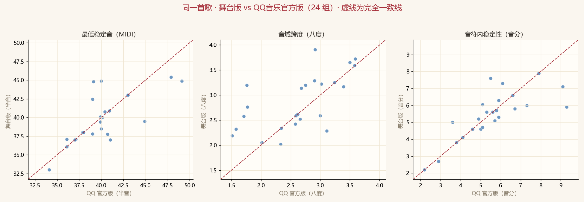

能力层：王晰主导巡演现场（228 条已实测素材）｜对照层：他人主导综艺 / 晚会 / 盛典商演 / 饭拍（32 个素材）· 更新 2026-09-17 17:02
| 巡次 | 城市 | 实测素材日期 | n | 最低稳定音 | 跨度中位 | 稳定性(音分) | 颤音(Hz) |
|---|---|---|---|---|---|---|---|
| 一巡 | 上海、北京、北京收官、南京、厦门、海口 | 2019-07-28~2020-01-02 | 50 | B1（61.2 Hz） | 3.04 | 7.4 | 4.79 |
| 二巡 | 南京 | 2021-04-11~2021-04-11 | 3 | F2（88.6 Hz） | 2.81 | 6.3 | 4.97 |
| 三巡 | 北京、深圳 | 2022-04-09~2023-06-23 | 2 | D#2（79.9 Hz） | 2.81 | 6.7 | 4.79 |
| 四巡 | 上海生日、南京、杭州、武汉 | 2023-2024~2024-04-06 | 32 | C2（65.0 Hz） | 2.81 | 7.85 | 4.79 |
| 五巡 | 北京、广州、杭州 | 2024-12-21~2025-05-24 | 4 | D2（73.9 Hz） | 2.95 | 6.85 | 4.86 |
| 六巡 | 广州、重庆 | 2026-06-13~2026-08-23 | 42 | C#2（69.8 Hz） | 2.96 | 7.7 | 4.97 |
| 曲目 | 现场（巡次·城市） | 现场最低稳定音 | 录音室专辑 | 录音室最低稳定音 | 差(半音) |
|---|---|---|---|---|---|
| 云一定知道 | 一巡｜厦门 2019-12-21 | D2 73.7 Hz | 歌颂 | D#2 75.7 Hz | -0.5 |
| 你 | 其他演出｜上海 2021 | F#2 90.5 Hz | 歌颂 | F2 86.1 Hz | +0.9 |
| 南屏晚钟 | 其他演出｜南京 2019-07-31 | D#2 77.2 Hz | Low C的诱惑 | D#2 76.9 Hz | +0.1 |
| 南屏晚钟 | 其他演出｜ 2019-09-14 | E2 80.4 Hz | Low C的诱惑 | D#2 76.9 Hz | +0.8 |
| 南屏晚钟 | 其他演出｜ 2019-08-18 | F#2 94.3 Hz | Low C的诱惑 | D#2 76.9 Hz | +3.5 |
| 多听有益 | 四巡｜上海生日 2024-04-06 | C2 65.2 Hz | X自选集 | B1 61.7 Hz | +1.0 |
| 多听有益 | 四巡｜杭州 2024 | C2 65.2 Hz | X自选集 | B1 61.7 Hz | +1.0 |
| 多听有益 | 四巡｜ 2023-2024 | D2 74.9 Hz | X自选集 | B1 61.7 Hz | +3.4 |
| 多听有益 | 其他演出｜ 2024-04-18 | F#2 95.2 Hz | X自选集 | B1 61.7 Hz | +7.5 |
| 多听有益 | 四巡｜武汉 2024 | A2 111.6 Hz | X自选集 | B1 61.7 Hz | +10.3 |
| 小河 | 四巡｜上海生日 2024-04-06 | D#2 79.5 Hz | X自选集 | E2 81.9 Hz | -0.5 |
| 怂 | 其他演出｜上海 2021 | A#2 116.9 Hz | 歌颂 | F2 88.2 Hz | +4.9 |
| 晚风 | 其他演出｜三亚 2023-02-25 | F#2 93.6 Hz | Low C的诱惑 | F2 85.6 Hz | +1.5 |
| 朝凤 | 四巡｜上海生日 2024-04-06 | C2 65.0 Hz | X自选集 | F2 87.4 Hz | -5.1 |
| 歌颂 | 其他演出｜上海 2021 | F#2 94.6 Hz | 歌颂 | F2 85.3 Hz | +1.8 |
| 爱情 | 其他演出｜上海 2021 | D2 73.6 Hz | Low C的诱惑 | D2 72.3 Hz | +0.3 |
| 爱情 | 其他演出｜上海 2021 | E2 81.3 Hz | Low C的诱惑 | D2 72.3 Hz | +2.0 |
| 猫模狗样 | 四巡｜上海生日 2024-04-06 | F#2 91.3 Hz | X自选集 | E2 82.3 Hz | +1.8 |
| 王牌就是我 | 其他演出｜上海 2021 | G2 97.7 Hz | 歌颂 | G2 97.5 Hz | +0.0 |
| 王牌就是我 | 其他演出｜上海 2021 | E3 160.8 Hz | 歌颂 | G2 97.5 Hz | +8.7 |
| 祝我们随遇而安 | 签唱会｜上海 2025-05-01 | F2 89.4 Hz | 不说 | D2 73.1 Hz | +3.5 |
| 祝我们随遇而安 | 签唱会｜上海 2025-05-01 | F#2 89.9 Hz | 不说 | D2 73.1 Hz | +3.6 |
| 等一等昨天 | 其他演出｜上海 2021 | A#2 114.3 Hz | 歌颂 | A#2 116.1 Hz | -0.3 |
| 茕茕 | 其他演出｜上海 2021 | D2 71.5 Hz | 重游往昔 | D2 73.4 Hz | -0.5 |
| 茕茕 | 其他演出｜上海 2021 | D2 75.0 Hz | 重游往昔 | D2 73.4 Hz | +0.4 |
| 贝加尔湖畔 | 一巡｜厦门 2019-12-21 | D2 73.2 Hz | Low C的诱惑Ⅱ | C#2 68.5 Hz | +1.1 |
| 静止了的夜晚 | 其他演出｜ 2019-04-14 | A#1 58.2 Hz | 重游往昔 | B1 61.5 Hz | -1.0 |
| 静止了的夜晚 | 其他演出｜成都 2019 | D2 73.4 Hz | 重游往昔 | B1 61.5 Hz | +3.1 |
| 静止了的夜晚 | 三巡｜深圳 2023-06-23 | D#2 79.9 Hz | 重游往昔 | B1 61.5 Hz | +4.5 |
| 鹅毛信 | 其他演出｜ 2024-10-26 | F2 87.0 Hz | 不说 | C2 65.3 Hz | +5.0 |
同一首歌的现场版与录音室版由完全相同的测量管线得出（分离 + 逐帧 F0 + 稳健过滤），因此差值可比：正值=现场比录音室高。差值反映当场的调性/编配选择，不是能力差。两表覆盖范围随后续实测自动扩大。
另有 1 组未列入：现场侧读数未过复核门槛（晚风暖暖 一巡 D#2 77.6Hz（待复核（谐波列待判）））——按本页纪律「待复核/未复核/仅参考」不作能力依据。
| 曲目 | 版本（巡次·城市 日期） | 最低稳定音 | 最高音 | 与最早版本差(半音) | 复核 | 来源 |
|---|---|---|---|---|---|---|
| Autumn Leaves | 其他演出｜广州 | C2 67.0 Hz | G#3 209.9 Hz | -1.5 | 人耳确认（听辨） | — |
| Autumn Leaves | 六巡｜广州 2026-08-23 | D2 73.0 Hz | C5 531.5 Hz | 0.0（基线） | 谐波列复核通过 | — |
| Besamemucho | 四巡｜上海生日 2024-04-06 | C#2 69.4 Hz | —（人耳判定非王晰） | 0.0（基线） | 人耳确认（听辨） | — |
| Besamemucho | 六巡｜广州 2026-08-23 | B2 124.9 Hz | —（人耳判定非王晰） | +10.2 | 人耳确认（听辨） | — |
| Bésame Mucho | 六巡｜广州 2026-08-23 | B2 121.8 Hz | G5 798.1 Hz | 0.0（基线） | 人耳确认（听辨） | — |
| Bésame Mucho | 其他演出｜广州 | B2 122.5 Hz | G5 791.6 Hz | +0.1 | 人耳确认（听辨） | — |
| Close to You | 其他演出｜广州 | D2 73.0 Hz | A5 865.8 Hz | -0.2 | 谐波列复核通过 | — |
| Close to You | 其他演出｜深圳 2023-07-04 | D2 73.7 Hz | A5 878.1 Hz | 0.0（基线） | 谐波列复核通过 | B站原链接 |
| Close to You | 六巡｜广州 2026-08-23 | D2 74.8 Hz | —（人耳判定非王晰） | +0.3 | 谐波列复核通过 | — |
| Yesterday Once More | 其他演出｜广州 | E2 83.3 Hz | G4 390.3 Hz | -0.3 | 谐波列复核通过 | — |
| Yesterday Once More | 其他演出｜广州 | E2 83.3 Hz | A4 440.9 Hz | -0.3 | 谐波列复核通过 | — |
| Yesterday Once More | 六巡｜广州 2026-08-23 | F2 84.9 Hz | E5 642.6 Hz | 0.0（基线） | 谐波列复核通过 | — |
| Your Man | 其他演出｜深圳 2019-09-18 | F2 87.1 Hz | A#5 912.5 Hz | -0.9 | 谐波列复核通过 | B站原链接 |
| Your Man | 其他演出｜北京 2019-08-18 | F2 88.9 Hz | A#4 471.1 Hz | -0.5 | 谐波列复核通过 | B站原链接 |
| Your Man | 其他演出｜ 2019-12-30 | F#2 89.9 Hz | A5 891.2 Hz | -0.3 | 谐波列复核通过 | B站原链接 |
| Your Man | 六巡｜广州 2026-08-23 | F#2 90.4 Hz | B5 961.4 Hz | -0.2 | 谐波列复核通过 | — |
| Your Man | 其他演出｜南京 2019-07-31 | F#2 90.4 Hz | A#4 475.8 Hz | -0.2 | 谐波列复核通过 | B站原链接 |
| Your Man | 其他演出｜广州 | F#2 90.6 Hz | G5 763.6 Hz | -0.2 | 谐波列复核通过 | — |
| Your Man | 其他演出｜ 2019-12-22 | F#2 90.9 Hz | B5 992.5 Hz | -0.1 | 谐波列复核通过 | B站原链接 |
| Your Man | 其他演出｜ 2019-06-10 | F#2 91.5 Hz | F5 714.5 Hz | 0.0（基线） | 谐波列复核通过 | B站原链接 |
| Your Man | 六巡｜广州 2026-08-23 | A2 110.6 Hz | G#5 841.6 Hz | +3.3 | 谐波列复核通过 | — |
| Yourman | 一巡｜北京收官 2020-01-02 | F2 85.7 Hz | A5 859.5 Hz | -0.3 | 待复核（谐波列待判） | — |
| Yourman | 一巡｜厦门 2019-12-21 | F2 87.2 Hz | A5 856.0 Hz | 0.0（基线） | 谐波列复核通过 | — |
| Yourman | 六巡｜广州 2026-08-23 | A2 109.1 Hz | —（人耳判定非王晰） | +3.9 | 谐波列复核通过 | — |
| cometome | 一巡｜厦门 2019-12-21 | F#2 90.2 Hz | C4 267.0 Hz | 0.0（基线） | 谐波列复核通过 | — |
| cometome | 一巡｜北京收官 2020-01-02 | A2 110.0 Hz | C#5 557.5 Hz | +3.4 | 谐波列复核通过 | — |
| 一生守候 | 其他演出｜ | C#2 69.5 Hz | E4 324.4 Hz | -0.8 | 谐波列复核通过 | B站原链接 |
| 一生守候 | 一巡｜厦门 2019-12-21 | D2 72.9 Hz | B5 960.9 Hz | 0.0（基线） | 谐波列复核通过 | — |
| 一生守候 | 其他演出｜ 2020-05-17 | D2 73.0 Hz | A3 219.0 Hz | +0.0 | 谐波列复核通过 | B站原链接 |
| 一生守候 | 六巡｜广州 2026-08-23 | D#2 77.8 Hz | A5 889.1 Hz | +1.1 | 谐波列复核通过 | — |
| 一生守候 | 六巡｜广州 2026-08-23 | D#2 78.2 Hz | G4 394.8 Hz | +1.2 | 谐波列复核通过 | — |
| 一生守候 | 其他演出｜广州 | D#2 78.4 Hz | A3 220.8 Hz | +1.3 | 谐波列复核通过 | — |
| 世界赠予我的 | 五巡｜北京 2025-04-05 | A2 110.7 Hz | D4 291.5 Hz | 0.0（基线） | 谐波列复核通过 | B站原链接 |
| 世界赠予我的 | 五巡｜北京 2025-04-05 | A2 110.7 Hz | F5 717.0 Hz | +0.0 | 谐波列复核通过 | B站原链接 |
| 云一定知道 | 一巡｜厦门 2019-12-21 | D2 73.7 Hz | A4 433.6 Hz | 0.0（基线） | 谐波列复核通过 | — |
| 亲密爱人 | 其他演出｜ 2019-12-29 | D#2 76.8 Hz | G5 802.0 Hz | 0.0（基线） | 人耳确认（听辨） | B站原链接 |
| 亲密爱人 | 其他演出｜ 2024-02-02 | E2 82.2 Hz | F#5 733.9 Hz | +1.2 | 谐波列复核通过 | B站原链接 |
| 你不要担心 | 一巡｜厦门 2019-12-21 | D2 73.7 Hz | D4 296.9 Hz | 0.0（基线） | 谐波列复核通过 | — |
| 你不要担心 | 一巡｜北京收官 2020-01-02 | D2 74.1 Hz | G5 782.0 Hz | +0.1 | 待复核（谐波列待判） | — |
| 像雾像雨又像风 | 其他演出｜ 2020-11-27 | E2 81.9 Hz | C4 266.8 Hz | -5.0 | 人耳确认（听辨） | B站原链接 |
| 像雾像雨又像风 | 六巡｜广州 2026-08-23 | F2 87.6 Hz | G#5 854.0 Hz | -3.9 | 人耳确认（听辨） | — |
| 像雾像雨又像风 | 其他演出｜广州 | F2 87.9 Hz | E4 326.2 Hz | -3.8 | 谐波列复核通过 | — |
| 像雾像雨又像风 | 其他演出｜ 2025-04-13 | G#2 104.0 Hz | C4 266.0 Hz | -0.9 | 谐波列复核通过 | B站原链接 |
| 像雾像雨又像风 | 其他演出｜ 2020-11-18 | A2 109.5 Hz | C4 266.8 Hz | 0.0（基线） | 谐波列复核通过 | B站原链接 |
| 像雾像雨又像风 | 六巡｜广州 2026-08-23 | A#2 114.6 Hz | B4 507.6 Hz | +0.8 | 谐波列复核通过 | — |
| 像雾像雨又像风 | 其他演出｜上海 2021 | A#2 118.8 Hz | G#5 848.8 Hz | +1.4 | 谐波列复核通过 | — |
| 再见我的爱人 | 六巡｜广州 2026-08-23 | D#2 76.4 Hz | F5 711.2 Hz | -0.0 | 谐波列复核通过 | — |
| 再见我的爱人 | 一巡｜厦门 2019-12-21 | D#2 76.5 Hz | A5 886.4 Hz | 0.0（基线） | 谐波列复核通过 | — |
| 再见我的爱人 | 六巡｜广州 2026-08-23 | D#2 76.5 Hz | A#4 456.7 Hz | +0.0 | 谐波列复核通过 | — |
| 再见我的爱人 | 其他演出｜广州 | D#2 77.0 Hz | F5 701.6 Hz | +0.1 | 谐波列复核通过 | — |
| 匆匆 | 其他演出｜上海 2021 | G2 98.2 Hz | A5 867.8 Hz | 0.0（基线） | 人耳确认（听辨） | — |
| 匆匆 | 其他演出｜上海 2021 | G2 98.3 Hz | C5 523.2 Hz | +0.0 | 人耳确认（听辨） | — |
| 南屏晚钟 | 其他演出｜南京 2019-07-31 | D#2 77.2 Hz | A3 215.3 Hz | 0.0（基线） | 谐波列复核通过 | B站原链接 |
| 南屏晚钟 | 其他演出｜ 2019-09-14 | E2 80.4 Hz | F5 698.7 Hz | +0.7 | 谐波列复核通过 | B站原链接 |
| 南屏晚钟 | 其他演出｜ 2019-08-18 | F#2 94.3 Hz | E4 325.0 Hz | +3.5 | 谐波列复核通过 | B站原链接 |
| 友谊地久天长 | 四巡｜上海生日 2024-04-06 | E2 84.3 Hz | C5 523.25 Hz 人耳确认 | -3.6 | 谐波列复核通过 | — |
| 友谊地久天长 | 四巡｜南京 2024-01-27 | G#2 103.6 Hz | C5 523.25 Hz 人耳确认 | 0.0（基线） | 人耳确认（听辨） | B站原链接 |
| 友谊地久天长 | 四巡｜南京 2024-01-27 | A2 109.9 Hz | C5 523.25 Hz 人耳确认 | +1.0 | 人耳确认（听辨） | B站原链接 |
| 哭砂 | 其他演出｜上海 2021 | C2 66.0 Hz | G4 400.5 Hz | -4.5 | 谐波列复核通过 | — |
| 哭砂 | 其他演出｜上海 2021 | E2 84.7 Hz | G#5 845.2 Hz | -0.1 | 谐波列复核通过 | — |
| 哭砂 | 其他演出｜ 2020-09-04 | F2 85.4 Hz | A4 441.4 Hz | 0.0（基线） | 谐波列复核通过 | B站原链接 |
| 多听有益 | 四巡｜上海生日 2024-04-06 | C2 65.2 Hz | C5 525.9 Hz | 0.0（基线） | 人耳确认（听辨） | — |
| 多听有益 | 四巡｜杭州 2024 | C2 65.2 Hz | —（人耳判定非王晰） | +0.0 | 人耳确认（听辨） | B站原链接 |
| 多听有益 | 四巡｜ 2023-2024 | D2 74.9 Hz | —（人耳判定非王晰） | +2.4 | 人耳确认（听辨） | B站原链接 |
| 多听有益 | 其他演出｜ 2024-04-18 | F#2 95.2 Hz | A#5 925.8 Hz | +6.6 | 人耳确认（听辨） | B站原链接 |
| 多听有益 | 四巡｜武汉 2024 | A2 111.6 Hz | —（人耳判定非王晰） | +9.3 | 人耳确认（听辨） | B站原链接 |
| 夜色 | 六巡｜广州 2026-08-23 | D#2 76.0 Hz | F3 174.0 Hz | 0.0（基线） | 谐波列复核通过 | — |
| 夜色 | 六巡｜广州 2026-08-23 | G2 97.0 Hz | F#5 740.9 Hz | +4.2 | 谐波列复核通过 | — |
| 夜色 | 其他演出｜广州 | B2 122.6 Hz | D#4 316.0 Hz | +8.3 | 谐波列复核通过 | — |
| 女人花+水中花 | 六巡｜广州 2026-08-23 | C#2 69.8 Hz | F#5 735.7 Hz | 0.0（基线） | 人耳确认（听辨） | — |
| 女人花+水中花 | 六巡｜广州 2026-08-23 | F2 86.3 Hz | D#5 622.3 Hz | +3.7 | 谐波列复核通过 | — |
| 她来听我的演唱会 | 一巡｜厦门 2019-12-21 | F2 86.5 Hz | A#4 463.1 Hz | 0.0（基线） | 谐波列复核通过 | — |
| 她来听我的演唱会 | 一巡｜北京收官 2020-01-02 | F2 89.2 Hz | G5 790.1 Hz | +0.5 | 人耳确认（听辨） | — |
| 小毛驴 | 签唱会｜杭州 2021-11-27 | D2 72.6 Hz | E4 330.6 Hz | -2.3 | 谐波列复核通过 | B站原链接 |
| 小毛驴 | 一巡｜上海 2019-11-03 | E2 83.1 Hz | A#5 910.8 Hz | 0.0（基线） | 谐波列复核通过 | B站原链接 |
| 平凡又美好的晚上 | 六巡｜广州 2026-08-23 | D#2 79.1 Hz | C5 522.4 Hz | 0.0（基线） | 谐波列复核通过 | — |
| 平凡又美好的晚上 | 其他演出｜广州 | E2 80.3 Hz | D#4 307.5 Hz | +0.3 | 谐波列复核通过 | — |
| 平凡又美好的晚上 | 六巡｜广州 2026-08-23 | E2 80.7 Hz | C5 520.4 Hz | +0.3 | 谐波列复核通过 | — |
| 心动 | 其他演出｜ 2020-01-28 | C2 64.3 Hz | G#5 850.9 Hz | -7.7 | 人耳确认（听辨） | B站原链接 |
| 心动 | 六巡｜广州 2026-08-23 | F#2 93.9 Hz | A4 447.9 Hz | -1.2 | 人耳确认（听辨） | — |
| 心动 | 其他演出｜广州 | G2 97.1 Hz | C#4 281.2 Hz | -0.6 | 人耳确认（听辨） | — |
| 心动 | 一巡｜厦门 2019-12-21 | G2 97.6 Hz | G#5 809.4 Hz | -0.5 | 人耳确认（听辨） | — |
| 心动 | 其他演出｜南京 2019-07-30 | G2 100.4 Hz | G5 763.7 Hz | 0.0（基线） | 人耳确认（听辨） | B站原链接 |
| 情网 | 六巡｜广州 2026-08-23 | D#2 76.1 Hz | F4 351.3 Hz | 0.0（基线） | 谐波列复核通过 | — |
| 情网 | 六巡｜广州 2026-08-23 | D#2 76.4 Hz | F5 691.3 Hz | +0.1 | 谐波列复核通过 | — |
| 情网 | 六巡｜广州 2026-08-23 | A2 110.4 Hz | —（人耳判定非王晰） | +6.4 | 谐波列复核通过 | — |
| 情网 | 其他演出｜广州 | A2 110.9 Hz | F4 346.8 Hz | +6.5 | 谐波列复核通过 | — |
| 我要你 | 其他演出｜ 2018-12-21 | D#2 78.1 Hz | B3 250.5 Hz | 0.0（基线） | 谐波列复核通过 | B站原链接 |
| 我要你 | 其他演出｜ 2019-01-11 | D#2 78.1 Hz | G#5 819.2 Hz | +0.0 | 谐波列复核通过 | B站原链接 |
| 我要你 | 其他演出｜成都 2019-11-28 | D#2 79.4 Hz | C#4 282.4 Hz | +0.3 | 谐波列复核通过 | B站原链接 |
| 月半弯 | 其他演出｜广州 | D#2 79.5 Hz | D#4 304.0 Hz | -0.4 | 谐波列复核通过 | — |
| 月半弯 | 六巡｜广州 2026-08-23 | E2 81.4 Hz | B5 989.9 Hz | 0.0（基线） | 人耳确认（听辨） | — |
| 月半弯 | 六巡｜广州 2026-08-23 | G2 98.6 Hz | G#5 829.5 Hz | +3.3 | 谐波列复核通过 | — |
| 橄榄树 | 六巡｜广州 2026-08-23 | F2 88.1 Hz | B5 983.3 Hz | 0.0（基线） | 谐波列复核通过 | — |
| 橄榄树 | 六巡｜广州 2026-08-23 | G2 100.3 Hz | A5 880.3 Hz | +2.2 | 谐波列复核通过 | — |
| 橄榄树 | 其他演出｜广州 | G#2 103.3 Hz | A5 859.3 Hz | +2.8 | 谐波列复核通过 | — |
| 爱情 | 其他演出｜上海 2021 | D2 73.6 Hz | C4 258.5 Hz | 0.0（基线） | 人耳确认（听辨） | — |
| 爱情 | 其他演出｜上海 2021 | E2 81.3 Hz | C4 261.8 Hz | +1.7 | 谐波列复核通过 | — |
| 王牌就是我 | 其他演出｜上海 2021 | G2 97.7 Hz | —（人耳判定非王晰） | 0.0（基线） | 谐波列复核通过 | — |
| 王牌就是我 | 其他演出｜上海 2021 | E3 160.8 Hz | C5 531.6 Hz | +8.6 | 谐波列复核通过 | — |
| 玛莲娜 | 一巡｜厦门 2019-12-21 | F#2 94.7 Hz | A#3 232.5 Hz | 0.0（基线） | 谐波列复核通过 | — |
| 玛莲娜 | 一巡｜北京收官 2020-01-02 | G2 97.2 Hz | A#5 936.1 Hz | +0.5 | 谐波列复核通过 | — |
| 祝我们随遇而安 | 签唱会｜上海 2025-05-01 | F2 89.4 Hz | F#5 719.5 Hz | 0.0（基线） | 谐波列复核通过 | B站原链接 |
| 祝我们随遇而安 | 签唱会｜上海 2025-05-01 | F#2 89.9 Hz | F5 703.0 Hz | +0.1 | 人耳确认（听辨） | B站原链接 |
| 花儿为什么这样红 | 其他演出｜广州 | C#2 69.7 Hz | D5 600.2 Hz | -0.7 | 谐波列复核通过 | — |
| 花儿为什么这样红 | 其他演出｜广州 | C#2 69.7 Hz | D5 600.1 Hz | -0.7 | 谐波列复核通过 | — |
| 花儿为什么这样红 | 其他演出｜上海 2021 | D2 72.1 Hz | —（人耳判定非王晰） | -0.1 | 谐波列复核通过 | — |
| 花儿为什么这样红 | 六巡｜广州 2026-08-23 | D2 72.2 Hz | D5 596.1 Hz | -0.1 | 谐波列复核通过 | — |
| 花儿为什么这样红 | 其他演出｜ 2020-11-16 | D2 72.7 Hz | G#5 813.5 Hz | 0.0（基线） | 谐波列复核通过 | B站原链接 |
| 花儿为什么这样红 | 六巡｜广州 2026-08-23 | D2 73.0 Hz | A5 903.0 Hz | +0.1 | 待复核（谐波列待判） | — |
| 花儿为什么这样红 | 其他演出｜杭州 2020-12-26 | D2 73.1 Hz | D5 584.7 Hz | +0.1 | 谐波列复核通过 | B站原链接 |
| 花儿为什么这样红 | 其他演出｜上海 2021 | F#2 92.8 Hz | A#5 914.0 Hz | +4.2 | 谐波列复核通过 | — |
| 花样年华 | 一巡｜厦门 2019-12-21 | G#2 102.0 Hz | F#4 366.9 Hz | 0.0（基线） | 谐波列复核通过 | — |
| 花样年华 | 一巡｜北京收官 2020-01-02 | G#2 106.4 Hz | A5 874.7 Hz | +0.7 | 谐波列复核通过 | — |
| 茕茕 | 其他演出｜上海 2021 | D2 71.5 Hz | G3 194.5 Hz | 0.0（基线） | 谐波列复核通过 | — |
| 茕茕 | 其他演出｜上海 2021 | D2 75.0 Hz | G5 776.3 Hz | +0.8 | 谐波列复核通过 | — |
| 让她降落 | 六巡｜广州 2026-08-23 | E2 82.6 Hz | B4 500.0 Hz | -1.7 | 人耳确认（听辨） | — |
| 让她降落 | 六巡｜广州 2026-08-23 | E2 84.5 Hz | E5 670.9 Hz | -1.3 | 双引擎一致 | B站原链接 |
| 让她降落 | 六巡｜广州 2026-08-23 | F2 88.1 Hz | B5 1000.2 Hz 人耳确认 | -0.6 | 人耳确认（听辨） | — |
| 让她降落 | 二巡｜南京 2021-04-11 | F2 88.6 Hz | G5 767.8 Hz | -0.5 | 谐波列复核通过 | B站原链接 |
| 让她降落 | 六巡｜重庆 2026-06-13 | F2 88.9 Hz | B4 489.4 Hz | -0.4 | 谐波列复核通过（同刻三源） | B站原链接 |
| 让她降落 | 其他演出｜太原 2019-12-29 | F#2 90.3 Hz | D5 573.3 Hz | -0.2 | 人耳确认（听辨） | B站原链接 |
| 让她降落 | 一巡｜南京 2019-07-28 | F#2 91.1 Hz | B5 984.0 Hz | 0.0（基线） | 谐波列复核通过 | B站原链接 |
| 让她降落 | 签唱会｜杭州 2021-11-27 | F#2 91.1 Hz | B5 965.6 Hz | +0.0 | 谐波列复核通过 | B站原链接 |
| 让她降落 | 一巡｜北京 2020-01-02 | F#2 91.7 Hz | A5 904.3 Hz | +0.1 | 人耳确认（听辨） | B站原链接 |
| 让她降落 | 其他演出｜广州 | F#2 91.9 Hz | G5 777.6 Hz | +0.2 | 谐波列复核通过 | — |
| 让她降落 | 一巡｜北京 2020-01-02 | F#2 92.1 Hz | A#5 937.0 Hz | +0.2 | 谐波列复核通过 | B站原链接 |
| 让她降落 | 一巡｜北京 2020-01-02 | F#2 92.1 Hz | A#5 928.0 Hz | +0.2 | 谐波列复核通过 | B站原链接 |
| 让她降落 | 其他演出｜广州 | F#2 92.3 Hz | B4 498.9 Hz | +0.2 | 谐波列复核通过 | — |
| 让她降落 | 六巡｜广州 2026-08-23 | G2 98.0 Hz | B4 501.5 Hz | +1.3 | 人耳确认（听辨） | B站原链接 |
| 让她降落 | 一巡｜北京收官 2020-01-02 | G2 98.5 Hz | A5 904.8 Hz | +1.4 | 谐波列复核通过 | — |
| 让她降落 | 六巡｜重庆 2026-06-13 | G#2 104.3 Hz | C#5 541.8 Hz | +2.3 | 双引擎一致 | B站原链接 |
| 让她降落 | 六巡｜重庆 2026-06-13 | G#2 106.4 Hz | B4 488.8 Hz | +2.7 | 双引擎一致 | B站原链接 |
| 让她降落 | 二巡｜南京 2021-04-11 | A2 108.6 Hz | F#5 761.0 Hz | +3.0 | 双引擎一致 | B站原链接 |
| 让她降落 | 二巡｜南京 2021-04-11 | A#2 117.8 Hz | B4 496.7 Hz | +4.4 | 双引擎一致 | B站原链接 |
| 跟着你到天边 | 一巡｜厦门 2019-12-21 | B1 61.2 Hz | D5 593.1 Hz | 0.0（基线） | 人耳确认（听辨） | — |
| 跟着你到天边 | 一巡｜北京收官 2020-01-02 | C#2 68.8 Hz | G5 797.3 Hz | +2.0 | 人耳确认（听辨） | — |
| 静止了的夜晚 | 其他演出｜ 2019-04-14 | A#1 58.2 Hz | B4 484.9 Hz | 0.0（基线） | 人耳确认（听辨） | B站原链接 |
| 静止了的夜晚 | 其他演出｜成都 2019 | D2 73.4 Hz | —（人耳判定非王晰） | +4.0 | 谐波列复核通过 | B站原链接 |
| 静止了的夜晚 | 三巡｜深圳 2023-06-23 | D#2 79.9 Hz | A#5 913.2 Hz | +5.5 | 谐波列复核通过 | B站原链接 |
同一首歌在不同巡次/城市的现场读数，差值相对该曲最早的现场版本（半音，正=比最早版本高）。不同场次的调性、编配、录音条件都会影响读数，差值用于观察版本差异，不作能力排序。
关于「同一场出现两行」：当同一位歌手的同一场演出存在多份独立录音（不同 UP 的现场录像）时，本项目会分别测量并并列列出 —— 这是有意为之的双源互证：两路独立音源若得出同一结论，可信度高于任何单一来源（复核判据②：同场同刻多源一致）。因此「巡次·城市·日期」相同、而来源/BV 不同的两行，不是重复录入。
| 曲目 | 版本（巡次·城市 日期） | 最低稳定音 | 最高音 | 复核 | 来源 |
|---|---|---|---|---|---|
| Autumnleaves | 六巡｜广州 2026-08-23 | F2 85.2 Hz | G#5 817.8 Hz | 人耳确认（听辨） | — |
| Closetoyou | 六巡｜广州 2026-08-23 | D2 75.2 Hz | G#5 822.1 Hz | 谐波列复核通过 | — |
| Dearfriend | 其他演出｜上海 2021 | B2 121.9 Hz | C#5 551.7 Hz | 谐波列复核通过 | — |
| My Oh My | 五巡｜杭州 2024-12-21 | D2 73.9 Hz | A5 889.2 Hz | 谐波列复核通过 | 来源 |
| Yesterdayoncemore | 六巡｜广州 2026-08-23 | F2 85.9 Hz | G#5 829.6 Hz | 谐波列复核通过 | — |
| Yourman② | 六巡｜广州 2026-08-23 | A2 111.9 Hz | — | 谐波列复核通过 | — |
| cityofstar | 其他演出｜上海 2021 | F#2 94.7 Hz | A3 222.3 Hz | 谐波列复核通过 | — |
| cityofstar3.7手机渣画质 | 其他演出｜上海 2021 | G2 99.1 Hz | G5 772.8 Hz | 谐波列复核通过 | — |
| crystalstore | 四巡｜上海生日 2024-04-06 | D2 73.2 Hz | C5 521.7 Hz | 谐波列复核通过 | — |
| mxh兄弟们的祝福 | 一巡｜北京收官 2020-01-02 | D2 74.4 Hz | A5 883.8 Hz | 谐波列复核通过 | — |
| 一生守候+很长一段内心独白 | 一巡｜北京收官 2020-01-02 | C#2 68.2 Hz | — | 待复核（谐波列待判） | — |
| 乌兰巴托的夜 | 其他演出｜ | D2 72.7 Hz | C6 1020.6 Hz 人耳确认 | 谐波列复核通过 | 来源 |
| 也许 | 四巡｜上海生日 2024-04-06 | G#2 102.4 Hz | G5 796.2 Hz | 谐波列复核通过 | — |
| 亲爱的中国，我的爱 | 一巡｜厦门 2019-12-21 | D#2 77.4 Hz | G5 782.3 Hz | 谐波列复核通过 | — |
| 人世间 | 四巡｜上海生日 2024-04-06 | D#2 77.4 Hz | F#5 725.0 Hz | 谐波列复核通过 | — |
| 你 | 其他演出｜上海 2021 | F#2 90.5 Hz | A#5 955.2 Hz | 谐波列复核通过 | — |
| 你3.7手机制渣画质 | 其他演出｜上海 2021 | F2 86.4 Hz | E3 165.6 Hz | 谐波列复核通过 | — |
| 你快乐所以我快乐 | 五巡｜广州 2025-05-24 | G2 96.2 Hz | A5 889.1 Hz | 谐波列复核通过 | 来源 |
| 光阴的故事 | 三巡｜北京 2022-04-09 | A2 108.1 Hz | A#4 469.9 Hz | 谐波列复核通过 | 来源 |
| 关于妖娆 | 四巡｜上海生日 2024-04-06 | C#2 68.6 Hz | D3 148.2 Hz | 谐波列复核通过 | — |
| 别离的预感 | 其他演出｜上海 2021 | A#2 117.1 Hz | C6 1060.8 Hz 人耳确认 | 人耳确认（听辨） | — |
| 剧院刮刮乐 | 四巡｜上海生日 2024-04-06 | C#2 69.7 Hz | C5 536.6 Hz | 谐波列复核通过 | — |
| 北国之春 | 四巡｜上海生日 2024-04-06 | D#2 77.1 Hz | A3 223.2 Hz | 未复核 | — |
| 吃播 | 一巡｜厦门 2019-12-21 | D2 74.5 Hz | C#5 561.0 Hz | 谐波列复核通过 | — |
| 同门的祝福 | 一巡｜北京收官 2020-01-02 | G2 95.6 Hz | F5 709.4 Hz | 谐波列复核通过 | — |
| 后会无期 | 其他演出｜上海 2021 | D2 72.5 Hz | F4 349.2 Hz | 人耳确认（听辨） | — |
| 后会无期3.7手机渣画质 | 其他演出｜上海 2021 | C2 65.4 Hz | G4 390.7 Hz | 人耳确认（听辨） | — |
| 后会无期3.8手机渣画质 | 其他演出｜上海 2021 | C2 65.6 Hz | F#4 368.1 Hz | 人耳确认（听辨） | — |
| 告别语+友谊地久天长 | 一巡｜北京收官 2020-01-02 | D2 74.0 Hz | — | 待复核（谐波列待判） | — |
| 天边 | 一巡｜海口 2019-11-16 | G2 100.5 Hz | D5 586.8 Hz | 谐波列复核通过 | 来源 |
| 女人花＋水中花 | 其他演出｜广州 | D#2 77.6 Hz | B4 486.6 Hz | 谐波列复核通过 | — |
| 如果云知道+云一定知道 | 其他演出｜上海 2021 | F2 86.2 Hz | C6 1052.9 Hz 人耳确认 | 谐波列复核通过 | — |
| 小河 | 四巡｜上海生日 2024-04-06 | D#2 79.5 Hz | F#5 752.7 Hz | 谐波列复核通过 | — |
| 山楂 | 一巡｜厦门 2019-12-21 | A2 108.2 Hz | A4 446.0 Hz | 待复核（谐波列待判） | — |
| 山楂2 | 一巡｜厦门 2019-12-21 | C2 65.5 Hz | A4 433.3 Hz | 人耳确认（听辨） | — |
| 山楂树 | 一巡｜厦门 2019-12-21 | A2 113.2 Hz | C#4 279.5 Hz | 谐波列复核通过 | — |
| 崇拜 | 四巡｜上海生日 2024-04-06 | D#2 76.0 Hz | C5 510.7 Hz | 谐波列复核通过 | — |
| 往日时光 | 一巡｜北京收官 2020-01-02 | E2 82.0 Hz | A#5 951.5 Hz | 待复核（谐波列待判） | — |
| 心动+被吐槽的我只在乎你 | 一巡｜北京收官 2020-01-02 | D2 73.3 Hz | — | 人耳确认（听辨） | — |
| 心脏 | 一巡｜北京收官 2020-01-02 | E3 167.6 Hz | A#5 954.1 Hz | 待复核（谐波列待判） | — |
| 忘词版海阔天空 | 一巡｜厦门 2019-12-21 | D2 72.9 Hz | A#4 466.5 Hz | 谐波列复核通过 | — |
| 怂 | 其他演出｜上海 2021 | A#2 116.9 Hz | A5 878.2 Hz | 谐波列复核通过 | — |
| 怂3.7手机渣画质 | 其他演出｜上海 2021 | F2 88.1 Hz | F#5 731.3 Hz | 待复核（谐波列待判） | — |
| 情网② | 六巡｜广州 2026-08-23 | D2 75.5 Hz | G#5 817.1 Hz | 谐波列复核通过 | — |
| 想游泳的星 | 四巡｜上海生日 2024-04-06 | D2 72.4 Hz | E5 655.5 Hz | 人耳确认（听辨） | — |
| 慢系列 | 其他演出｜上海 2021 | E2 82.6 Hz | C#4 279.9 Hz | 谐波列复核通过 | — |
| 我的太阳 | 一巡｜厦门 2019-12-21 | A2 108.6 Hz | A5 896.6 Hz | 谐波列复核通过 | — |
| 敕勒歌 | 其他演出｜ 2025-04-13 | B2 122.8 Hz | D#5 632.7 Hz | 谐波列复核通过 | 来源 |
| 日语歌恋人哟 | 一巡｜厦门 2019-12-21 | G2 96.6 Hz | F5 698.3 Hz | 谐波列复核通过 | — |
| 晚风 | 其他演出｜三亚 2023-02-25 | F#2 93.6 Hz | G#5 848.4 Hz | 谐波列复核通过 | 来源 |
| 晚风暖暖 | 一巡｜北京收官 2020-01-02 | D#2 77.6 Hz | B5 983.6 Hz | 待复核（谐波列待判） | — |
| 暖风 | 一巡｜厦门 2019-12-21 | G2 98.1 Hz | C5 510.7 Hz | 谐波列复核通过 | — |
| 有点小害羞的应援观后感 | 四巡｜上海生日 2024-04-06 | D2 72.8 Hz | B4 506.8 Hz | 谐波列复核通过 | — |
| 朝凤 | 四巡｜上海生日 2024-04-06 | C2 65.0 Hz | — | 谐波列复核通过 | — |
| 李彦锋2 | 一巡｜厦门 2019-12-21 | D3 147.9 Hz | D#5 628.1 Hz | 待复核（谐波列待判） | — |
| 李彦锋红眼睛 | 一巡｜厦门 2019-12-21 | C#2 67.4 Hz | F5 710.5 Hz | 待复核（谐波列待判） | — |
| 梦醒时分 | 四巡｜上海生日 2024-04-06 | G#2 104.1 Hz | C#4 279.6 Hz | 人耳确认（听辨） | — |
| 歌颂 | 其他演出｜上海 2021 | F#2 94.6 Hz | D5 589.9 Hz | 谐波列复核通过 | — |
| 永不失联的爱 | 四巡｜上海生日 2024-04-06 | D2 74.0 Hz | A#4 467.7 Hz | 谐波列复核通过 | — |
| 海然海然+嘎达梅林 | 四巡｜上海生日 2024-04-06 | D2 71.4 Hz | D5 588.4 Hz | 谐波列复核通过 | — |
| 爱的箴言 | 四巡｜上海生日 2024-04-06 | D#2 77.0 Hz | C4 264.5 Hz | 谐波列复核通过 | — |
| 猫模狗样 | 四巡｜上海生日 2024-04-06 | F#2 91.3 Hz | D5 587.8 Hz | 谐波列复核通过 | — |
| 生日part | 四巡｜上海生日 2024-04-06 | D#2 79.4 Hz | A4 438.8 Hz | 谐波列复核通过 | — |
| 生日快乐歌 | 四巡｜上海生日 2024-04-06 | E2 82.6 Hz | B3 247.4 Hz | 谐波列复核通过 | — |
| 甩啦甩啦 | 四巡｜上海生日 2024-04-06 | E2 81.7 Hz | D5 586.9 Hz | 谐波列复核通过 | — |
| 痒1 | 一巡｜厦门 2019-12-21 | D2 74.7 Hz | — | 谐波列复核通过 | — |
| 痒2 | 一巡｜厦门 2019-12-21 | F#2 92.7 Hz | — | 谐波列复核通过 | — |
| 直到世界尽头 | 一巡｜厦门 2019-12-21 | C3 131.5 Hz | E5 649.0 Hz | 谐波列复核通过 | — |
| 着魔 | 四巡｜上海生日 2024-04-06 | E2 80.6 Hz | B5 981.6 Hz | 谐波列复核通过 | — |
| 矜持+难以抗拒你的容颜+为你我受冷风吹 | 四巡｜上海生日 2024-04-06 | D#2 78.2 Hz | C5 532.0 Hz | 谐波列复核通过 | — |
| 笑之歌 | 一巡｜北京收官 2020-01-02 | G#2 103.0 Hz | — | 谐波列复核通过 | — |
| 等一等昨天 | 其他演出｜上海 2021 | A#2 114.3 Hz | B5 990.3 Hz | 谐波列复核通过 | — |
| 绝美玫瑰雨 | 四巡｜上海生日 2024-04-06 | D#2 78.0 Hz | C#5 539.3 Hz | 谐波列复核通过 | — |
| 花儿为什么这样红3.8手机渣画质 | 其他演出｜上海 2021 | D3 146.2 Hz | D5 593.4 Hz | 谐波列复核通过 | — |
| 谁 | 一巡｜厦门 2019-12-21 | C2 65.4 Hz | D4 292.8 Hz | 人耳确认（听辨） | — |
| 贝加尔湖 | 一巡｜北京收官 2020-01-02 | D2 74.9 Hz | D5 588.4 Hz | 待复核（谐波列待判） | — |
| 贝加尔湖畔 | 一巡｜厦门 2019-12-21 | D2 73.2 Hz | G5 801.5 Hz | 人耳确认（听辨） | — |
| 迷迭香+人间 | 一巡｜厦门 2019-12-21 | G#2 105.8 Hz | A#4 456.2 Hz | 谐波列复核通过 | — |
| 迷雾 | 四巡｜上海生日 2024-04-06 | D2 73.4 Hz | E5 655.7 Hz | 谐波列复核通过 | — |
| 追幸福的人 | 其他演出｜上海 2021 | A#2 118.7 Hz | D5 591.6 Hz | 谐波列复核通过 | — |
| 追梦人 | 四巡｜上海生日 2024-04-06 | F2 86.4 Hz | C5 535.9 Hz | 谐波列复核通过 | — |
| 野狼disco+青藏高原 | 一巡｜厦门 2019-12-21 | F#2 91.8 Hz | G5 796.5 Hz | 谐波列复核通过 | — |
| 钢铁小毛驴 | 一巡｜北京收官 2020-01-02 | E2 80.1 Hz | — | 待复核（谐波列待判） | — |
| 问候妆容和打光所有场最美！ | 一巡｜北京收官 2020-01-02 | D#2 77.2 Hz | — | 待复核（谐波列待判） | — |
| 雪地里寄不出的求救信3.7手机渣画质 | 其他演出｜上海 2021 | A2 107.1 Hz | C5 528.6 Hz | 谐波列复核通过 | — |
| 雪孩子 | 其他演出｜上海 2021 | A2 113.1 Hz | C4 261.4 Hz | 谐波列复核通过 | — |
| 鹅毛信 | 其他演出｜ 2024-10-26 | F2 87.0 Hz | F5 696.4 Hz | 谐波列复核通过 | 来源 |
共 87 条。这些曲目目前只有一次现场实测记录，因此没有跨版本差值可比；一旦补录同曲第二场，会自动升入上表参与对照。
同曲对照：录音室 61.6 Hz ↔ 现场 65.3 Hz（杭州站（肆益巡演））——录音室稳定音 B1（61.6Hz，三处 0.28–0.35s）与现场稳定音 C2（65.3Hz，1.0–1.25s 台地）相差约 1.0 个半音——同一低音区在两种语境下都稳定可复现
「最近发行」= 该巡开始前最近发行的专辑（发行日期为 QQ 音乐核验的精确日期，见 data/album_release_verify.md）；带 EP 标记的是 EP（如《回望》3 首，无同名巡演，勿与巡演主题混淆）。
| 巡次 | 场次 | 起止 | 该巡前最近发行 | 新专辑曲目进歌单 | 覆盖率 | 王晰原唱 | 备注 |
|---|---|---|---|---|---|---|---|
| 一巡「Cherish珍晰」 | 17 | 2019-06-07~2020-01-02 | 重游往昔（2017-11） | 4/8 | 50.0% | 17/109（15.6%） | — |
| 二巡「2020-2021 个人巡回」 | 11 | 2020-11-14~2021-04-11 | 歌颂（2020-08） | 6/10 | 60.0% | 9/48（18.8%） | 唱前巡曲目 5 首（10.4%） |
| 三巡「图景」 | 12 | 2021-12-04~2023-06-23 | B面图景（2021-11） | 8/10 | 80.0% | 12/50（24.0%） | 唱前巡曲目 4 首（8.0%） |
| 四巡「肆益」 | 9 | 2023-11-12~2024-09-16 | X自选集（2022-12） | 6/9 | 66.7% | 10/53（18.9%） | 唱前巡曲目 9 首（17.0%）；其中原唱：再回首、南屏晚钟 |
| 五巡「吾」 | 8 | 2024-12-21~2026-04-10 | 不说（2024-12） | 8/8 | 100.0% | 9/45（20.0%） | 唱前巡曲目 3 首（6.7%） |
| 六巡「回」 | 2 | 2026-06-13~2026-08-23 | 不说（2024-12） | 0/8 | 0.0% | 1/18（5.6%） | 唱前巡曲目 12 首（66.7%） |
「王晰原唱」口径（下限）：录音室专辑曲目（72 首）∪ 网易云目录中「演唱者=王晰（独唱）」且非 Live/综艺/合辑 的曲目（合计 118 首）。 部分原唱以单曲/影视歌形式发行、未进上述目录（如《让她降落》《天边》），故实际原唱占比只会更高。 「备注」列的「唱前巡曲目」只有六巡《回》显著（66.7%），其中原唱即《平凡又美好的晚上》。
| 巡次 | 城市 | 日期 | 最低稳定音 | Hz | 最高稳定音 | 跨度 | 稳定性 | 颤音(Hz/音分) | 复核 | 测量入口 | 来源 |
|---|---|---|---|---|---|---|---|---|---|---|---|
| 一巡 | 厦门 | 2019-12-21 | B1 | 61.2 | D5 | 3.28 | 8.3 | 5.07/79.0 | 人耳确认（听辨） | 场次音频实测 | — |
| 一巡 | 厦门 | 2019-12-21 | C2 | 65.4 | D4 | 2.16 | 8.0 | 4.79/79.0 | 人耳确认（听辨） | 场次音频实测 | — |
| 一巡 | 厦门 | 2019-12-21 | C2 | 65.5 | A4 | 2.73 | 8.4 | 4.79/76.0 | 人耳确认（听辨） | 场次音频实测 | — |
| 一巡 | 厦门 | 2019-12-21 | C#2 | 67.4 | F5 | 3.4 | 6.7 | 4.58/77.0 | 待复核（谐波列待判） | 场次音频实测 | — |
| 一巡 | 北京收官 | 2020-01-02 | C#2 | 68.2 | — | — | 8.2 | 4.97/80.0 | 待复核（谐波列待判） | 场次音频实测 | — |
| 一巡 | 北京收官 | 2020-01-02 | C#2 | 68.8 | G5 | 3.53 | 6.9 | 4.79/79.0 | 人耳确认（听辨） | 场次音频实测 | — |
| 一巡 | 厦门 | 2019-12-21 | D2 | 72.9 | B5 | 3.72 | 9.8 | 4.79/86.0 | 谐波列复核通过 | 场次音频实测 | — |
| 一巡 | 厦门 | 2019-12-21 | D2 | 72.9 | A#4 | 2.68 | 7.1 | 4.79/72.0 | 谐波列复核通过 | 场次音频实测 | — |
| 一巡 | 厦门 | 2019-12-21 | D2 | 73.2 | G5 | 3.45 | 8.7 | 4.79/84.0 | 人耳确认（听辨） | 场次音频实测 | — |
| 一巡 | 北京收官 | 2020-01-02 | D2 | 73.3 | — | — | 7.8 | 4.79/86.0 | 人耳确认（听辨） | 场次音频实测 | — |
| 一巡 | 厦门 | 2019-12-21 | D2 | 73.7 | A4 | 2.56 | 7.2 | 4.92/78.0 | 谐波列复核通过 | 场次音频实测 | — |
| 一巡 | 厦门 | 2019-12-21 | D2 | 73.7 | D4 | 2.01 | 6.1 | 4.65/74.0 | 谐波列复核通过 | 场次音频实测 | — |
| 一巡 | 北京收官 | 2020-01-02 | D2 | 74.0 | — | — | 7.8 | 5.17/79.0 | 待复核（谐波列待判） | 场次音频实测 | — |
| 一巡 | 北京收官 | 2020-01-02 | D2 | 74.1 | G5 | 3.4 | 5.9 | 5.22/61.0 | 待复核（谐波列待判） | 场次音频实测 | — |
| 一巡 | 北京收官 | 2020-01-02 | D2 | 74.4 | A5 | 3.57 | 9.5 | 4.69/80.0 | 谐波列复核通过 | 场次音频实测 | — |
| 一巡 | 厦门 | 2019-12-21 | D2 | 74.5 | C#5 | 2.91 | 7.0 | 5.38/79.0 | 谐波列复核通过 | 场次音频实测 | — |
| 一巡 | 厦门 | 2019-12-21 | D2 | 74.7 | — | 3.75 | 8.5 | 4.42/93.0 | 谐波列复核通过 | 场次音频实测 | — |
| 一巡 | 北京收官 | 2020-01-02 | D2 | 74.9 | D5 | 2.97 | 7.8 | 4.84/77.0 | 待复核（谐波列待判） | 场次音频实测 | — |
| 一巡 | 厦门 | 2019-12-21 | D#2 | 76.5 | A5 | 3.53 | 7.9 | 5.12/88.0 | 谐波列复核通过 | 场次音频实测 | — |
| 一巡 | 北京收官 | 2020-01-02 | D#2 | 77.2 | — | — | 7.8 | 5.22/101.0 | 待复核（谐波列待判） | 场次音频实测 | — |
| 一巡 | 厦门 | 2019-12-21 | D#2 | 77.4 | G5 | 3.34 | 6.6 | 4.93/67.0 | 谐波列复核通过 | 场次音频实测 | — |
| 一巡 | 北京收官 | 2020-01-02 | D#2 | 77.6 | B5 | 3.66 | 6.7 | 4.57/75.0 | 待复核（谐波列待判） | 场次音频实测 | — |
| 一巡 | 北京收官 | 2020-01-02 | E2 | 80.1 | — | — | 8.2 | 4.31/74.0 | 待复核（谐波列待判） | 场次音频实测 | — |
| 一巡 | 北京收官 | 2020-01-02 | E2 | 82.0 | A#5 | 3.54 | 7.6 | 4.64/80.0 | 待复核（谐波列待判） | 场次音频实测 | — |
| 一巡 | 上海 | 2019-11-03 | E2 | 83.1 | A#5 | 3.45 | 7.9 | 3.92/80.0 | 谐波列复核通过 | 场次音频实测 | B站原链接 |
| 一巡 | 北京收官 | 2020-01-02 | F2 | 85.7 | A5 | 3.33 | 5.7 | 5.07/87.0 | 待复核（谐波列待判） | 场次音频实测 | — |
| 一巡 | 厦门 | 2019-12-21 | F2 | 86.5 | A#4 | 2.42 | 7.5 | 4.57/86.0 | 谐波列复核通过 | 场次音频实测 | — |
| 一巡 | 厦门 | 2019-12-21 | F2 | 87.2 | A5 | 3.3 | 6.9 | 5.38/80.0 | 谐波列复核通过 | 场次音频实测 | — |
| 一巡 | 北京收官 | 2020-01-02 | F2 | 89.2 | G5 | 3.15 | 6.5 | 4.79/71.0 | 人耳确认（听辨） | 场次音频实测 | — |
| 一巡 | 厦门 | 2019-12-21 | F#2 | 90.2 | C4 | 1.57 | 8.8 | 5.07/91.0 | 谐波列复核通过 | 场次音频实测 | — |
| 一巡 | 南京 | 2019-07-28 | F#2 | 91.1 | B5 | 3.43 | 7.7 | 5.02/85.0 | 谐波列复核通过 | 场次音频实测 | B站原链接 |
| 一巡 | 北京 | 2020-01-02 | F#2 | 91.7 | A5 | 3.3 | 6.7 | 5.17/60.0 | 人耳确认（听辨） | 场次音频实测 | B站原链接 |
| 一巡 | 厦门 | 2019-12-21 | F#2 | 91.8 | G5 | 3.12 | 7.3 | 5.07/75.0 | 谐波列复核通过 | 场次音频实测 | — |
| 一巡 | 北京 | 2020-01-02 | F#2 | 92.1 | A#5 | 3.35 | 5.7 | 5.07/65.0 | 谐波列复核通过 | 场次音频实测 | B站原链接 |
| 一巡 | 北京 | 2020-01-02 | F#2 | 92.1 | A#5 | 3.33 | 6.0 | 5.07/68.0 | 谐波列复核通过 | 场次音频实测 | B站原链接 |
| 一巡 | 厦门 | 2019-12-21 | F#2 | 92.7 | — | 3.5 | 8.5 | 4.79/78.0 | 谐波列复核通过 | 场次音频实测 | — |
| 一巡 | 厦门 | 2019-12-21 | F#2 | 94.7 | A#3 | 1.3 | 8.5 | 4.31/81.0 | 谐波列复核通过 | 场次音频实测 | — |
| 一巡 | 北京收官 | 2020-01-02 | G2 | 95.6 | F5 | 2.89 | 7.6 | 5.07/87.0 | 谐波列复核通过 | 场次音频实测 | — |
| 一巡 | 厦门 | 2019-12-21 | G2 | 96.6 | F5 | 2.85 | 7.1 | 5.12/98.0 | 谐波列复核通过 | 场次音频实测 | — |
| 一巡 | 北京收官 | 2020-01-02 | G2 | 97.2 | A#5 | 3.27 | 7.9 | 4.66/79.0 | 谐波列复核通过 | 场次音频实测 | — |
| 一巡 | 厦门 | 2019-12-21 | G2 | 97.6 | G#5 | 3.05 | 8.7 | 4.79/84.0 | 人耳确认（听辨） | 场次音频实测 | — |
| 一巡 | 厦门 | 2019-12-21 | G2 | 98.1 | C5 | 2.38 | 5.9 | 4.79/74.0 | 谐波列复核通过 | 场次音频实测 | — |
| 一巡 | 北京收官 | 2020-01-02 | G2 | 98.5 | A5 | 3.2 | 6.8 | 4.79/79.0 | 谐波列复核通过 | 场次音频实测 | — |
| 一巡 | 海口 | 2019-11-16 | G2 | 100.5 | D5 | 2.55 | 6.9 | 4.79/72.0 | 谐波列复核通过 | 场次音频实测 | B站原链接 |
| 一巡 | 厦门 | 2019-12-21 | G#2 | 102.0 | F#4 | 1.85 | 9.1 | 5.17/84.0 | 谐波列复核通过 | 场次音频实测 | — |
| 一巡 | 北京收官 | 2020-01-02 | G#2 | 103.0 | — | — | 9.2 | 4.64/88.0 | 谐波列复核通过 | 场次音频实测 | — |
| 一巡 | 厦门 | 2019-12-21 | G#2 | 105.8 | A#4 | 2.11 | 6.9 | 4.79/77.0 | 谐波列复核通过 | 场次音频实测 | — |
| 一巡 | 北京收官 | 2020-01-02 | G#2 | 106.4 | A5 | 3.04 | 7.7 | 4.82/91.0 | 谐波列复核通过 | 场次音频实测 | — |
| 一巡 | 厦门 | 2019-12-21 | A2 | 108.2 | A4 | 2.04 | 9.7 | 5.02/94.0 | 待复核（谐波列待判） | 场次音频实测 | — |
| 一巡 | 厦门 | 2019-12-21 | A2 | 108.6 | A5 | 3.05 | 6.8 | 5.07/68.0 | 谐波列复核通过 | 场次音频实测 | — |
| 一巡 | 北京收官 | 2020-01-02 | A2 | 110.0 | C#5 | 2.34 | 8.3 | 4.79/88.0 | 谐波列复核通过 | 场次音频实测 | — |
| 一巡 | 厦门 | 2019-12-21 | A2 | 113.2 | C#4 | 1.3 | 7.4 | 5.08/78.0 | 谐波列复核通过 | 场次音频实测 | — |
| 一巡 | 厦门 | 2019-12-21 | C3 | 131.5 | E5 | 2.3 | 3.6 | 4.31/78.0 | 谐波列复核通过 | 场次音频实测 | — |
| 一巡 | 厦门 | 2019-12-21 | D3 | 147.9 | D#5 | 2.09 | 7.3 | 5.38/87.0 | 待复核（谐波列待判） | 场次音频实测 | — |
| 一巡 | 北京收官 | 2020-01-02 | E3 | 167.6 | A#5 | 2.51 | 8.1 | 4.97/91.0 | 待复核（谐波列待判） | 场次音频实测 | — |
| 一巡 | 北京收官 | 2020-01-02 | None | C#5 | 2.86 | 6.8 | 4.79/79.0 | 人耳确认（听辨） | 场次音频实测 | — | |
| 二巡 | 南京 | 2021-04-11 | F2 | 88.6 | G5 | 3.11 | 7.4 | 4.97/84.0 | 谐波列复核通过 | 场次音频实测 | B站原链接 |
| 二巡 | 南京 | 2021-04-11 | A2 | 108.6 | F#5 | 2.81 | 6.3 | 4.97/82.0 | 双引擎一致 | 场次音频实测 | B站原链接 |
| 二巡 | 南京 | 2021-04-11 | A#2 | 117.8 | B4 | 2.08 | 5.7 | 5.07/70.0 | 双引擎一致 | 场次音频实测 | B站原链接 |
| 三巡 | 深圳 | 2023-06-23 | D#2 | 79.9 | A#5 | 3.51 | 5.7 | 4.79/63.0 | 谐波列复核通过 | 场次音频实测 | B站原链接 |
| 三巡 | 北京 | 2022-04-09 | A2 | 108.1 | A#4 | 2.12 | 7.7 | 4.79/73.0 | 谐波列复核通过 | 场次音频实测 | B站原链接 |
| 四巡 | 上海生日 | 2024-04-06 | C2 | 65.0 | — | — | 9.1 | 4.53/91.0 | 谐波列复核通过 | 场次音频实测 | — |
| 四巡 | 上海生日 | 2024-04-06 | C2 | 65.2 | C5 | 3.01 | 7.5 | 4.97/84.0 | 人耳确认（听辨） | 场次音频实测 | — |
| 四巡 | 杭州 | 2024 | C2 | 65.2 | — | — | — | — | 人耳确认（听辨） | 十曲精测 | B站原链接 |
| 四巡 | 上海生日 | 2024-04-06 | C#2 | 68.6 | D3 | 1.11 | 7.5 | 6.33/60.0 | 谐波列复核通过 | 场次音频实测 | — |
| 四巡 | 上海生日 | 2024-04-06 | C#2 | 69.4 | — | — | 8.0 | 5.07/91.0 | 人耳确认（听辨） | 场次音频实测 | — |
| 四巡 | 上海生日 | 2024-04-06 | C#2 | 69.7 | C5 | 2.95 | 6.4 | 4.53/68.0 | 谐波列复核通过 | 场次音频实测 | — |
| 四巡 | 上海生日 | 2024-04-06 | D2 | 71.4 | D5 | 3.04 | 8.5 | 5.07/82.0 | 谐波列复核通过 | 场次音频实测 | — |
| 四巡 | 上海生日 | 2024-04-06 | D2 | 72.4 | E5 | 3.18 | 9.0 | 5.05/93.0 | 人耳确认（听辨） | 场次音频实测 | — |
| 四巡 | 上海生日 | 2024-04-06 | D2 | 72.8 | B4 | 2.8 | 7.0 | 4.79/106.0 | 谐波列复核通过 | 场次音频实测 | — |
| 四巡 | 上海生日 | 2024-04-06 | D2 | 73.2 | C5 | 2.83 | 8.9 | 4.79/80.0 | 谐波列复核通过 | 场次音频实测 | — |
| 四巡 | 上海生日 | 2024-04-06 | D2 | 73.4 | E5 | 3.16 | 10.3 | 4.79/92.0 | 谐波列复核通过 | 场次音频实测 | — |
| 四巡 | 上海生日 | 2024-04-06 | D2 | 74.0 | A#4 | 2.66 | 8.2 | 4.97/91.0 | 谐波列复核通过 | 场次音频实测 | — |
| 四巡 | 2023-2024 | D2 | 74.9 | — | — | — | — | 人耳确认（听辨） | 十曲精测 | B站原链接 | |
| 四巡 | 上海生日 | 2024-04-06 | D#2 | 76.0 | C5 | 2.75 | 7.1 | 4.79/78.0 | 谐波列复核通过 | 场次音频实测 | — |
| 四巡 | 上海生日 | 2024-04-06 | D#2 | 77.0 | C4 | 1.78 | 11.5 | 5.04/98.0 | 谐波列复核通过 | 场次音频实测 | — |
| 四巡 | 上海生日 | 2024-04-06 | D#2 | 77.1 | A3 | 1.53 | 10.2 | 4.61/89.0 | 未复核 | 场次音频实测 | — |
| 四巡 | 上海生日 | 2024-04-06 | D#2 | 77.4 | F#5 | 3.23 | 8.3 | 4.97/87.0 | 谐波列复核通过 | 场次音频实测 | — |
| 四巡 | 上海生日 | 2024-04-06 | D#2 | 78.0 | C#5 | 2.79 | 8.4 | 4.79/76.0 | 谐波列复核通过 | 场次音频实测 | — |
| 四巡 | 上海生日 | 2024-04-06 | D#2 | 78.2 | C5 | 2.77 | 9.8 | 4.79/88.0 | 谐波列复核通过 | 场次音频实测 | — |
| 四巡 | 上海生日 | 2024-04-06 | D#2 | 79.4 | A4 | 2.47 | 6.7 | 5.07/57.0 | 谐波列复核通过 | 场次音频实测 | — |
| 四巡 | 上海生日 | 2024-04-06 | D#2 | 79.5 | F#5 | 3.24 | 9.7 | 4.79/89.0 | 谐波列复核通过 | 场次音频实测 | — |
| 四巡 | 上海生日 | 2024-04-06 | E2 | 80.6 | B5 | 3.61 | 9.2 | 4.79/95.0 | 谐波列复核通过 | 场次音频实测 | — |
| 四巡 | 上海生日 | 2024-04-06 | E2 | 81.7 | D5 | 2.85 | 7.6 | 4.79/84.0 | 谐波列复核通过 | 场次音频实测 | — |
| 四巡 | 上海生日 | 2024-04-06 | E2 | 82.6 | B3 | 1.58 | 7.0 | 4.46/78.0 | 谐波列复核通过 | 场次音频实测 | — |
| 四巡 | 上海生日 | 2024-04-06 | E2 | 84.3 | C5 | 2.94 | 7.7 | 4.79/76.0 | 谐波列复核通过 | 场次音频实测 | — |
| 四巡 | 上海生日 | 2024-04-06 | F2 | 86.4 | C5 | 2.63 | 9.1 | 4.79/88.0 | 谐波列复核通过 | 场次音频实测 | — |
| 四巡 | 上海生日 | 2024-04-06 | F#2 | 91.3 | D5 | 2.69 | 7.2 | 4.85/85.0 | 谐波列复核通过 | 场次音频实测 | — |
| 四巡 | 上海生日 | 2024-04-06 | G#2 | 102.4 | G5 | 2.96 | 7.5 | 4.79/81.0 | 谐波列复核通过 | 场次音频实测 | — |
| 四巡 | 南京 | 2024-01-27 | G#2 | 103.6 | C5 | — | 6.6 | 4.79/69.0 | 人耳确认（听辨） | 场次音频实测 | B站原链接 |
| 四巡 | 上海生日 | 2024-04-06 | G#2 | 104.1 | C#4 | 1.43 | 6.5 | 5.07/77.0 | 人耳确认（听辨） | 场次音频实测 | — |
| 四巡 | 南京 | 2024-01-27 | A2 | 109.9 | C5 | — | 6.8 | 5.07/76.0 | 人耳确认（听辨） | 场次音频实测 | B站原链接 |
| 四巡 | 武汉 | 2024 | A2 | 111.6 | — | — | — | — | 人耳确认（听辨） | 十曲精测 | B站原链接 |
| 五巡 | 杭州 | 2024-12-21 | D2 | 73.9 | A5 | 3.59 | 7.1 | 4.93/88.0 | 谐波列复核通过 | 场次音频实测 | B站原链接 |
| 五巡 | 广州 | 2025-05-24 | G2 | 96.2 | A5 | 3.21 | 5.3 | 4.79/69.0 | 谐波列复核通过 | 场次音频实测 | B站原链接 |
| 五巡 | 北京 | 2025-04-05 | A2 | 110.7 | D4 | 1.4 | 8.8 | 4.79/84.0 | 谐波列复核通过 | 场次音频实测 | B站原链接 |
| 五巡 | 北京 | 2025-04-05 | A2 | 110.7 | F5 | 2.69 | 6.6 | 5.07/66.0 | 谐波列复核通过 | 场次音频实测 | B站原链接 |
| 六巡 | 广州 | 2026-08-23 | C#2 | 69.8 | F#5 | 3.4 | 7.7 | 4.97/86.0 | 人耳确认（听辨） | 场次音频实测 | — |
| 六巡 | 广州 | 2026-08-23 | D2 | 72.2 | D5 | 3.05 | 7.7 | 4.79/85.0 | 谐波列复核通过 | 场次音频实测 | — |
| 六巡 | 广州 | 2026-08-23 | D2 | 73.0 | C5 | 2.86 | 7.5 | 4.89/83.0 | 谐波列复核通过 | 场次音频实测 | — |
| 六巡 | 广州 | 2026-08-23 | D2 | 73.0 | A5 | 3.63 | 7.1 | 4.79/89.0 | 待复核（谐波列待判） | 场次音频实测 | — |
| 六巡 | 广州 | 2026-08-23 | D2 | 74.8 | — | — | 8.1 | 5.07/86.0 | 谐波列复核通过 | 场次音频实测 | — |
| 六巡 | 广州 | 2026-08-23 | D2 | 75.2 | G#5 | 3.45 | 8.5 | 4.79/78.0 | 谐波列复核通过 | 场次音频实测 | — |
| 六巡 | 广州 | 2026-08-23 | D2 | 75.5 | G#5 | 3.44 | 7.6 | 4.97/78.0 | 谐波列复核通过 | 场次音频实测 | — |
| 六巡 | 广州 | 2026-08-23 | D#2 | 76.0 | F3 | 2.2 | 7.5 | 5.07/81.0 | 谐波列复核通过 | 场次音频实测 | — |
| 六巡 | 广州 | 2026-08-23 | D#2 | 76.1 | F4 | 2.21 | 8.1 | 4.64/81.0 | 谐波列复核通过 | 场次音频实测 | — |
| 六巡 | 广州 | 2026-08-23 | D#2 | 76.4 | F5 | 3.18 | 7.9 | 4.79/76.0 | 谐波列复核通过 | 场次音频实测 | — |
| 六巡 | 广州 | 2026-08-23 | D#2 | 76.4 | F5 | 3.22 | 7.9 | 5.38/87.0 | 谐波列复核通过 | 场次音频实测 | — |
| 六巡 | 广州 | 2026-08-23 | D#2 | 76.5 | A#4 | 2.58 | 8.9 | 4.79/92.0 | 谐波列复核通过 | 场次音频实测 | — |
| 六巡 | 广州 | 2026-08-23 | D#2 | 77.8 | A5 | 3.52 | 9.2 | 4.79/88.0 | 谐波列复核通过 | 场次音频实测 | — |
| 六巡 | 广州 | 2026-08-23 | D#2 | 78.2 | G4 | 2.34 | 8.7 | 4.97/93.0 | 谐波列复核通过 | 场次音频实测 | — |
| 六巡 | 广州 | 2026-08-23 | D#2 | 79.1 | C5 | 2.72 | 7.9 | 4.66/86.0 | 谐波列复核通过 | 场次音频实测 | — |
| 六巡 | 广州 | 2026-08-23 | E2 | 80.7 | C5 | 2.69 | 8.8 | 5.07/92.0 | 谐波列复核通过 | 场次音频实测 | — |
| 六巡 | 广州 | 2026-08-23 | E2 | 81.4 | B5 | 3.6 | 7.1 | 4.97/81.0 | 人耳确认（听辨） | 场次音频实测 | — |
| 六巡 | 广州 | 2026-08-23 | E2 | 82.6 | B4 | 2.6 | 7.9 | 5.07/80.0 | 人耳确认（听辨） | 场次音频实测 | — |
| 六巡 | 广州 | 2026-08-23 | E2 | 84.5 | E5 | 2.99 | 6.4 | 5.0/72.0 | 双引擎一致 | 场次音频实测 | B站原链接 |
| 六巡 | 广州 | 2026-08-23 | F2 | 84.9 | E5 | 2.92 | 6.6 | 4.68/75.0 | 谐波列复核通过 | 场次音频实测 | — |
| 六巡 | 广州 | 2026-08-23 | F2 | 85.2 | G#5 | 3.26 | 7.8 | 5.07/87.0 | 人耳确认（听辨） | 场次音频实测 | — |
| 六巡 | 广州 | 2026-08-23 | F2 | 85.9 | G#5 | 3.27 | 5.7 | 4.79/75.0 | 谐波列复核通过 | 场次音频实测 | — |
| 六巡 | 广州 | 2026-08-23 | F2 | 86.3 | D#5 | 2.85 | 8.3 | 5.04/78.0 | 谐波列复核通过 | 场次音频实测 | — |
| 六巡 | 广州 | 2026-08-23 | F2 | 87.6 | G#5 | 3.29 | 7.1 | 5.07/89.0 | 人耳确认（听辨） | 场次音频实测 | — |
| 六巡 | 广州 | 2026-08-23 | F2 | 88.1 | B5 | 3.48 | 6.9 | 5.01/92.0 | 谐波列复核通过 | 场次音频实测 | — |
| 六巡 | 广州 | 2026-08-23 | F2 | 88.1 | B5 | 3.51 | 7.7 | 5.07/92.0 | 人耳确认（听辨） | 场次音频实测 | — |
| 六巡 | 重庆 | 2026-06-13 | F2 | 88.9 | B4 | 3.0 | 8.6 | 5.07/91.0 | 谐波列复核通过（同刻三源） | 场次音频实测 | B站原链接 |
| 六巡 | 广州 | 2026-08-23 | F#2 | 90.4 | B5 | 3.41 | 7.3 | 5.07/83.0 | 谐波列复核通过 | 场次音频实测 | — |
| 六巡 | 广州 | 2026-08-23 | F#2 | 93.9 | A4 | 2.25 | 8.9 | 4.88/93.0 | 人耳确认（听辨） | 场次音频实测 | — |
| 六巡 | 广州 | 2026-08-23 | G2 | 97.0 | F#5 | 2.93 | 7.4 | 4.97/84.0 | 谐波列复核通过 | 场次音频实测 | — |
| 六巡 | 广州 | 2026-08-23 | G2 | 98.0 | B4 | 2.6 | 7.0 | 5.03/82.0 | 人耳确认（听辨） | 场次音频实测 | B站原链接 |
| 六巡 | 广州 | 2026-08-23 | G2 | 98.6 | G#5 | 3.07 | 7.5 | 4.79/75.0 | 谐波列复核通过 | 场次音频实测 | — |
| 六巡 | 广州 | 2026-08-23 | G2 | 100.3 | A5 | 3.13 | 7.3 | 4.79/75.0 | 谐波列复核通过 | 场次音频实测 | — |
| 六巡 | 重庆 | 2026-06-13 | G#2 | 104.3 | C#5 | 2.38 | 7.3 | 4.92/78.0 | 双引擎一致 | 场次音频实测 | B站原链接 |
| 六巡 | 重庆 | 2026-06-13 | G#2 | 106.4 | B4 | 2.2 | 6.2 | 4.79/54.0 | 双引擎一致 | 场次音频实测 | B站原链接 |
| 六巡 | 广州 | 2026-08-23 | A2 | 109.1 | — | — | 7.8 | 5.38/96.0 | 谐波列复核通过 | 场次音频实测 | — |
| 六巡 | 广州 | 2026-08-23 | A2 | 110.4 | — | — | 7.6 | 4.92/79.0 | 谐波列复核通过 | 场次音频实测 | — |
| 六巡 | 广州 | 2026-08-23 | A2 | 110.6 | G#5 | 2.93 | 6.7 | 4.79/93.0 | 谐波列复核通过 | 场次音频实测 | — |
| 六巡 | 广州 | 2026-08-23 | A2 | 111.9 | — | — | 7.7 | 5.07/82.0 | 谐波列复核通过 | 场次音频实测 | — |
| 六巡 | 广州 | 2026-08-23 | A#2 | 114.6 | B4 | 2.15 | 8.1 | 4.79/86.0 | 谐波列复核通过 | 场次音频实测 | — |
| 六巡 | 广州 | 2026-08-23 | B2 | 121.8 | G5 | 2.71 | 5.8 | 4.79/85.0 | 人耳确认（听辨） | 场次音频实测 | — |
| 六巡 | 广州 | 2026-08-23 | B2 | 124.9 | — | — | 6.7 | 5.07/82.0 | 人耳确认（听辨） | 场次音频实测 | — |
| 其他演出 | 2019-04-14 | A#1 | 58.2 | B4 | 3.06 | 7.3 | 5.07/79.0 | 人耳确认（听辨） | 场次音频实测 | B站原链接 | |
| 其他演出 | 2020-01-28 | C2 | 64.3 | G#5 | 3.73 | 7.0 | 5.07/71.0 | 人耳确认（听辨） | 场次音频实测 | B站原链接 | |
| 其他演出 | 上海 | 2021 | C2 | 65.4 | G4 | 2.58 | 6.7 | 4.97/96.0 | 人耳确认（听辨） | 场次音频实测 | — |
| 其他演出 | 上海 | 2021 | C2 | 65.6 | F#4 | 2.49 | 7.3 | 5.07/102.0 | 人耳确认（听辨） | 场次音频实测 | — |
| 其他演出 | 上海 | 2021 | C2 | 66.0 | G4 | 2.6 | 6.5 | 5.07/68.0 | 谐波列复核通过 | 场次音频实测 | — |
| 其他演出 | 广州 | C2 | 67.0 | G#3 | 1.65 | 10.5 | 5.17/104.0 | 人耳确认（听辨） | 场次音频实测 | — | |
| 其他演出 | C#2 | 69.5 | E4 | 2.22 | 5.8 | 5.32/72.0 | 谐波列复核通过 | 场次音频实测 | B站原链接 | ||
| 其他演出 | 广州 | C#2 | 69.7 | D5 | 3.11 | 8.0 | 4.97/93.0 | 谐波列复核通过 | 场次音频实测 | — | |
| 其他演出 | 广州 | C#2 | 69.7 | D5 | 3.11 | 8.0 | 4.94/94.0 | 谐波列复核通过 | 场次音频实测 | — | |
| 其他演出 | 上海 | 2021 | D2 | 71.5 | G3 | 1.44 | 8.8 | 4.97/71.0 | 谐波列复核通过 | 场次音频实测 | — |
| 其他演出 | 上海 | 2021 | D2 | 72.1 | — | — | 3.9 | 4.79/51.0 | 谐波列复核通过 | 场次音频实测 | — |
| 其他演出 | 上海 | 2021 | D2 | 72.5 | F4 | 2.27 | 6.3 | 5.14/90.0 | 人耳确认（听辨） | 场次音频实测 | — |
| 签唱会 | 杭州 | 2021-11-27 | D2 | 72.6 | E4 | 2.19 | 5.5 | 4.97/58.0 | 谐波列复核通过 | 场次音频实测 | B站原链接 |
| 其他演出 | D2 | 72.7 | C6 | 3.81 | 6.6 | 4.91/68.0 | 谐波列复核通过 | 场次音频实测 | B站原链接 | ||
| 其他演出 | 2020-11-16 | D2 | 72.7 | G#5 | 3.48 | 7.5 | 4.79/81.0 | 谐波列复核通过 | 场次音频实测 | B站原链接 | |
| 其他演出 | 2020-05-17 | D2 | 73.0 | A3 | 1.58 | 7.3 | 5.32/89.0 | 谐波列复核通过 | 场次音频实测 | B站原链接 | |
| 其他演出 | 广州 | D2 | 73.0 | A5 | 3.57 | 8.4 | 4.79/90.0 | 谐波列复核通过 | 场次音频实测 | — | |
| 其他演出 | 杭州 | 2020-12-26 | D2 | 73.1 | D5 | 3.0 | 5.8 | 4.79/74.0 | 谐波列复核通过 | 场次音频实测 | B站原链接 |
| 其他演出 | 成都 | 2019 | D2 | 73.4 | — | — | 8.9 | 5.07/88.0 | 谐波列复核通过 | 场次音频实测 | B站原链接 |
| 其他演出 | 上海 | 2021 | D2 | 73.6 | C4 | 1.81 | 9.7 | 5.17/81.0 | 人耳确认（听辨） | 场次音频实测 | — |
| 其他演出 | 深圳 | 2023-07-04 | D2 | 73.7 | A5 | 3.57 | 5.9 | 4.93/73.0 | 谐波列复核通过 | 场次音频实测 | B站原链接 |
| 其他演出 | 上海 | 2021 | D2 | 75.0 | G5 | 3.37 | 10.5 | 5.07/98.0 | 谐波列复核通过 | 场次音频实测 | — |
| 其他演出 | 2019-12-29 | D#2 | 76.8 | G5 | 3.38 | 4.9 | 5.1/73.0 | 人耳确认（听辨） | 场次音频实测 | B站原链接 | |
| 其他演出 | 广州 | D#2 | 77.0 | F5 | 3.19 | 9.5 | 4.79/95.0 | 谐波列复核通过 | 场次音频实测 | — | |
| 其他演出 | 南京 | 2019-07-31 | D#2 | 77.2 | A3 | 1.48 | 9.9 | 5.17/85.0 | 谐波列复核通过 | 场次音频实测 | B站原链接 |
| 其他演出 | 广州 | D#2 | 77.6 | B4 | 2.65 | 8.7 | 4.88/79.0 | 谐波列复核通过 | 场次音频实测 | — | |
| 其他演出 | 2018-12-21 | D#2 | 78.1 | B3 | 1.68 | 11.0 | 5.38/118.0 | 谐波列复核通过 | 场次音频实测 | B站原链接 | |
| 其他演出 | 2019-01-11 | D#2 | 78.1 | G#5 | 3.39 | 9.9 | 5.07/114.0 | 谐波列复核通过 | 场次音频实测 | B站原链接 | |
| 其他演出 | 广州 | D#2 | 78.4 | A3 | 1.49 | 9.1 | 4.98/87.0 | 谐波列复核通过 | 场次音频实测 | — | |
| 其他演出 | 成都 | 2019-11-28 | D#2 | 79.4 | C#4 | 2.83 | 8.7 | 5.07/73.0 | 谐波列复核通过 | 场次音频实测 | B站原链接 |
| 其他演出 | 广州 | D#2 | 79.5 | D#4 | 1.93 | 7.7 | 4.79/73.0 | 谐波列复核通过 | 场次音频实测 | — | |
| 其他演出 | 广州 | E2 | 80.3 | D#4 | 1.94 | 8.2 | 4.79/87.0 | 谐波列复核通过 | 场次音频实测 | — | |
| 其他演出 | 2019-09-14 | E2 | 80.4 | F5 | 3.12 | 7.3 | 5.07/82.0 | 谐波列复核通过 | 场次音频实测 | B站原链接 | |
| 其他演出 | 上海 | 2021 | E2 | 81.3 | C4 | 1.69 | 8.2 | 5.38/74.0 | 谐波列复核通过 | 场次音频实测 | — |
| 其他演出 | 2020-11-27 | E2 | 81.9 | C4 | 1.7 | 7.2 | 4.92/70.0 | 人耳确认（听辨） | 场次音频实测 | B站原链接 | |
| 其他演出 | 2024-02-02 | E2 | 82.2 | F#5 | 3.16 | 6.4 | 5.38/88.0 | 谐波列复核通过 | 场次音频实测 | B站原链接 | |
| 其他演出 | 上海 | 2021 | E2 | 82.6 | C#4 | 1.76 | 6.6 | 4.79/75.0 | 谐波列复核通过 | 场次音频实测 | — |
| 其他演出 | 广州 | E2 | 83.3 | G4 | 2.23 | 7.3 | 4.88/73.0 | 谐波列复核通过 | 场次音频实测 | — | |
| 其他演出 | 广州 | E2 | 83.3 | A4 | 2.4 | 7.4 | 4.79/72.0 | 谐波列复核通过 | 场次音频实测 | — | |
| 其他演出 | 上海 | 2021 | E2 | 84.7 | G#5 | 3.32 | 6.0 | 5.25/80.0 | 谐波列复核通过 | 场次音频实测 | — |
| 其他演出 | 2020-09-04 | F2 | 85.4 | A4 | 2.37 | 8.1 | 5.07/88.0 | 谐波列复核通过 | 场次音频实测 | B站原链接 | |
| 其他演出 | 上海 | 2021 | F2 | 86.2 | C6 | 3.61 | 5.8 | 4.61/60.0 | 谐波列复核通过 | 场次音频实测 | — |
| 其他演出 | 上海 | 2021 | F2 | 86.4 | E3 | 0.94 | 9.5 | 4.79/85.0 | 谐波列复核通过 | 场次音频实测 | — |
| 其他演出 | 2024-10-26 | F2 | 87.0 | F5 | 3.0 | 6.4 | 4.97/77.0 | 谐波列复核通过 | 场次音频实测 | B站原链接 | |
| 其他演出 | 深圳 | 2019-09-18 | F2 | 87.1 | A#5 | 3.39 | 6.9 | 5.07/95.0 | 谐波列复核通过 | 场次音频实测 | B站原链接 |
| 其他演出 | 广州 | F2 | 87.9 | E4 | 1.89 | 8.8 | 5.07/85.0 | 谐波列复核通过 | 场次音频实测 | — | |
| 其他演出 | 上海 | 2021 | F2 | 88.1 | F#5 | 3.05 | 4.7 | 5.38/66.0 | 待复核（谐波列待判） | 场次音频实测 | — |
| 其他演出 | 北京 | 2019-08-18 | F2 | 88.9 | A#4 | 2.41 | 7.5 | 5.07/94.0 | 谐波列复核通过 | 场次音频实测 | B站原链接 |
| 签唱会 | 上海 | 2025-05-01 | F2 | 89.4 | F#5 | 3.01 | 6.5 | 5.07/86.0 | 谐波列复核通过 | 场次音频实测 | B站原链接 |
| 其他演出 | 2019-12-30 | F#2 | 89.9 | A5 | 3.31 | 6.7 | 5.28/62.0 | 谐波列复核通过 | 场次音频实测 | B站原链接 | |
| 签唱会 | 上海 | 2025-05-01 | F#2 | 89.9 | F5 | 2.97 | 6.6 | 4.97/77.0 | 人耳确认（听辨） | 场次音频实测 | B站原链接 |
| 其他演出 | 太原 | 2019-12-29 | F#2 | 90.3 | D5 | 2.67 | 7.2 | 5.17/77.0 | 人耳确认（听辨） | 场次音频实测 | B站原链接 |
| 其他演出 | 南京 | 2019-07-31 | F#2 | 90.4 | A#4 | 2.4 | 6.5 | 5.38/72.0 | 谐波列复核通过 | 场次音频实测 | B站原链接 |
| 其他演出 | 上海 | 2021 | F#2 | 90.5 | A#5 | 3.4 | 5.5 | 5.38/69.0 | 谐波列复核通过 | 场次音频实测 | — |
| 其他演出 | 广州 | F#2 | 90.6 | G5 | 3.08 | 8.7 | 5.17/95.0 | 谐波列复核通过 | 场次音频实测 | — | |
| 其他演出 | 2019-12-22 | F#2 | 90.9 | B5 | 3.45 | 5.4 | 5.07/70.0 | 谐波列复核通过 | 场次音频实测 | B站原链接 | |
| 签唱会 | 杭州 | 2021-11-27 | F#2 | 91.1 | B5 | 3.41 | 7.2 | 4.88/74.0 | 谐波列复核通过 | 场次音频实测 | B站原链接 |
| 其他演出 | 2019-06-10 | F#2 | 91.5 | F5 | 2.97 | 7.7 | 5.07/74.0 | 谐波列复核通过 | 场次音频实测 | B站原链接 | |
| 其他演出 | 广州 | F#2 | 91.9 | G5 | 3.08 | 8.4 | 5.07/99.0 | 谐波列复核通过 | 场次音频实测 | — | |
| 其他演出 | 广州 | F#2 | 92.3 | B4 | 2.43 | 8.6 | 5.07/100.0 | 谐波列复核通过 | 场次音频实测 | — | |
| 其他演出 | 上海 | 2021 | F#2 | 92.8 | A#5 | 3.3 | 4.2 | 4.49/42.0 | 谐波列复核通过 | 场次音频实测 | — |
| 其他演出 | 三亚 | 2023-02-25 | F#2 | 93.6 | G#5 | 3.18 | 8.9 | 4.61/98.0 | 谐波列复核通过 | 场次音频实测 | B站原链接 |
| 其他演出 | 2019-08-18 | F#2 | 94.3 | E4 | 1.78 | 8.6 | 4.46/91.0 | 谐波列复核通过 | 场次音频实测 | B站原链接 | |
| 其他演出 | 上海 | 2021 | F#2 | 94.6 | D5 | 2.64 | 6.1 | 4.79/85.0 | 谐波列复核通过 | 场次音频实测 | — |
| 其他演出 | 上海 | 2021 | F#2 | 94.7 | A3 | 1.23 | 6.4 | 4.93/74.0 | 谐波列复核通过 | 场次音频实测 | — |
| 其他演出 | 2024-04-18 | F#2 | 95.2 | A#5 | 3.28 | 6.5 | 4.79/81.0 | 人耳确认（听辨） | 场次音频实测 | B站原链接 | |
| 其他演出 | 广州 | G2 | 97.1 | C#4 | 1.53 | 8.0 | 4.79/90.0 | 人耳确认（听辨） | 场次音频实测 | — | |
| 其他演出 | 上海 | 2021 | G2 | 97.7 | — | — | 4.2 | 5.07/46.0 | 谐波列复核通过 | 场次音频实测 | — |
| 其他演出 | 上海 | 2021 | G2 | 98.2 | A5 | 3.14 | 5.1 | 4.53/65.0 | 人耳确认（听辨） | 场次音频实测 | — |
| 其他演出 | 上海 | 2021 | G2 | 98.3 | C5 | 2.41 | 5.9 | 5.17/74.0 | 人耳确认（听辨） | 场次音频实测 | — |
| 其他演出 | 上海 | 2021 | G2 | 99.1 | G5 | 2.96 | 6.5 | 5.07/95.0 | 谐波列复核通过 | 场次音频实测 | — |
| 其他演出 | 南京 | 2019-07-30 | G2 | 100.4 | G5 | 2.93 | 9.0 | 4.79/90.0 | 人耳确认（听辨） | 场次音频实测 | B站原链接 |
| 其他演出 | 广州 | G#2 | 103.3 | A5 | 3.06 | 8.6 | 5.07/83.0 | 谐波列复核通过 | 场次音频实测 | — | |
| 其他演出 | 2025-04-13 | G#2 | 104.0 | C4 | 1.36 | 7.6 | 5.07/86.0 | 谐波列复核通过 | 场次音频实测 | B站原链接 | |
| 其他演出 | 上海 | 2021 | A2 | 107.1 | C5 | 3.3 | 5.4 | 5.07/61.0 | 谐波列复核通过 | 场次音频实测 | — |
| 其他演出 | 2020-11-18 | A2 | 109.5 | C4 | 1.28 | 7.4 | 4.79/77.0 | 谐波列复核通过 | 场次音频实测 | B站原链接 | |
| 其他演出 | 广州 | A2 | 110.9 | F4 | 1.64 | 8.5 | 5.07/88.0 | 谐波列复核通过 | 场次音频实测 | — | |
| 其他演出 | 上海 | 2021 | A2 | 113.1 | C4 | 1.21 | 8.3 | 5.13/75.0 | 谐波列复核通过 | 场次音频实测 | — |
| 其他演出 | 上海 | 2021 | A#2 | 114.3 | B5 | 3.11 | 3.9 | 4.79/45.0 | 谐波列复核通过 | 场次音频实测 | — |
| 其他演出 | 上海 | 2021 | A#2 | 116.9 | A5 | 2.91 | 3.7 | 4.79/61.0 | 谐波列复核通过 | 场次音频实测 | — |
| 其他演出 | 上海 | 2021 | A#2 | 117.1 | C6 | 3.18 | 3.1 | 5.17/37.0 | 人耳确认（听辨） | 场次音频实测 | — |
| 其他演出 | 上海 | 2021 | A#2 | 118.7 | D5 | 2.32 | 3.8 | 5.07/54.0 | 谐波列复核通过 | 场次音频实测 | — |
| 其他演出 | 上海 | 2021 | A#2 | 118.8 | G#5 | 2.84 | 5.0 | 4.79/60.0 | 谐波列复核通过 | 场次音频实测 | — |
| 其他演出 | 上海 | 2021 | B2 | 121.9 | C#5 | 2.18 | 6.0 | 4.79/81.0 | 谐波列复核通过 | 场次音频实测 | — |
| 其他演出 | 广州 | B2 | 122.5 | G5 | 2.69 | 9.4 | 4.92/93.0 | 人耳确认（听辨） | 场次音频实测 | — | |
| 其他演出 | 广州 | B2 | 122.6 | D#4 | 1.37 | 7.6 | 5.07/80.0 | 谐波列复核通过 | 场次音频实测 | — | |
| 其他演出 | 2025-04-13 | B2 | 122.8 | D#5 | 2.37 | 9.7 | 4.97/85.0 | 谐波列复核通过 | 场次音频实测 | B站原链接 | |
| 其他演出 | 上海 | 2021 | D3 | 146.2 | D5 | 2.02 | 5.0 | 4.72/45.0 | 谐波列复核通过 | 场次音频实测 | — |
| 其他演出 | 上海 | 2021 | E3 | 160.8 | C5 | 2.72 | 2.6 | 4.79/60.0 | 谐波列复核通过 | 场次音频实测 | — |
本层两个测量入口、同一口径：场次音频实测（巡演现场音轨 → 人声分离 → 逐帧 F0，含跨度/颤音等全指标）与 十曲精测（早前逐曲核验的现场个案，只有最低稳定音读数，相应列显示 —）。两者都按「最低稳定音」口径引用。
⚠️ 标「待复核」「仅参考」的读数只列不判，不作能力依据；现场素材为公开视频音轨，非官方音源。

来源：B站收藏夹「王晰综艺现场live」（fid=4075783258，共 44 条）。 自动归类 + 逐条人工校准后，纳入实测 32 个： 综艺 20、 晚会 5、 盛典商演 4、 饭拍直拍 3。 另有棚版混音 8 条（非现场，单列不计入）与他人分析视频/混剪 3 条（非原始音源，排除）。
| 分类 | n | 最低音中位(MIDI) | 最高音中位(MIDI) | 跨度中位 | 稳定性(音分) | 密度(/s) | 低音区占比 | 高音区占比 |
|---|---|---|---|---|---|---|---|---|
| 综艺 | 20 | 40 | 77 | 2.98 | 5.8 | 1.65 | 11% | 19% |
| 晚会 | 5 | 38 | 74 | 2.95 | 4.6 | 1.52 | 12% | 20% |
| 盛典商演 | 4 | 42 | 73 | 2.19 | 8.3 | 1.72 | 11% | 18% |
| 饭拍直拍 | 3 | 45 | 78 | 2.86 | 5.2 | 1.75 | 1% | 40% |
MIDI 参考：C3=48、C4=60、E4=64、C5=72、E5=76、C6=84。
| # | 分类 | 曲目（点击回 B站） | 最低音 | Hz | 最高音 | Hz | 跨度 | 音符 | 密度 | 稳定性 | 颤音 |
|---|---|---|---|---|---|---|---|---|---|---|---|
| 1 | 综艺 | 【1080P】【开口跪神级Live现场】尚雯婕 王晰《云与海》 | C#2 | 69.2 | A5 | 866 | 3.65 | 517 | 2.03 | 5.6 | 5.65/97 |
| 2 | 综艺 | 《如愿》王晰 檀健次 马佳 | C#2 | 69.3 | F4 | 352 | 2.34 | 437 | 1.79 | 3.8 | 5.38/76 |
| 3 | 综艺 | 经典咏流传《渡荆门送别》歌曲及访谈 | C#2 | 69.7 | G#5 | 838 | 3.59 | 898 | 1.20 | 5.0 | 4.79/49 |
| 4 | 综艺 | 王晰汪小敏《偏执》 | C#2 | 69.8 | C6 | 1052 | 3.91 | 489 | 2.03 | 4.7 | 5.19/62 |
| 5 | 综艺 | 【追光吧第二季】王晰 小毛驴 | D2 | 72.7 | E4 | 331 | 2.19 | 219 | 1.23 | 5.3 | 5.07/42 |
| 6 | 综艺 | 【综艺大观园】王晰演唱《谁》《一生守候》 | D2 | 73.2 | F#4 | 365 | 2.32 | 452 | 1.36 | 6.0 | 5.38/75 |
| 7 | 综艺 | 《凄美地》我晰哥就是魅力一百分！ | D#2 | 77.6 | G#5 | 814 | 3.39 | 468 | 1.86 | 5.3 | 4.88/57 |
| 8 | 综艺 | 追光吧 王晰满江 逆光 | D#2 | 78.3 | E5 | 674 | 3.11 | 432 | 1.59 | 5.2 | 5.22/60 |
| 9 | 综艺 | 歌曲《稳稳的幸福》 演唱：王晰 | D#2 | 79.6 | E4 | 329 | 2.05 | 352 | 1.88 | 6.6 | 5.07/65 |
| 10 | 综艺 | 全场第一！这个男人唱起情歌还是如此无敌 _ 王晰《牵手》_ 中国情歌大会 | E2 | 80.3 | G5 | 788 | 3.29 | 516 | 1.60 | 6.3 | 5.02/62 |
| 11 | 综艺 | 怀旧经典《再见我的爱人》，王晰嗓音颇有邓丽君的魅力，全场震惊 | E2 | 81.8 | A4 | 441 | 2.43 | 562 | 1.82 | 7.7 | 5.38/80 |
| 12 | 综艺 | 经典咏流传 《滚滚长江东逝水》杨洪基 王晰1080P超清重制版 | E2 | 82.6 | F#5 | 729 | 3.14 | 433 | 1.43 | 7.9 | 5.07/78 |
| 13 | 综艺 | 王晰《亲密爱人》I Am a Singer 2016 | E2 | 83.0 | A4 | 445 | 2.42 | 462 | 1.52 | 5.8 | 5.74/83 |
| 14 | 综艺 | 〖王晰 重来〗王晰迷人低音演唱《重来》好听至极，唱到心坎里去了！ | F2 | 86.8 | G5 | 801 | 3.20 | 445 | 1.82 | 7.1 | 5.15/75 |
| 15 | 综艺 | 王晰低音我是歌手 | F2 | 87.8 | C6 | 1043 | 3.57 | 469 | 1.67 | 5.8 | 5.38/73 |
| 16 | 综艺 | 王晰唱响戚继光的《望阙台》，领悟抗倭名将的赤胆忠心！【经典咏流传第四季】 | G2 | 97.7 | D5 | 602 | 2.62 | 367 | 1.58 | 5.7 | 5.07/70 |
| 17 | 综艺 | 经典咏流传《节气歌》王晰 朱德恩 1080P超清重制版 | G2 | 98.0 | D5 | 589 | 2.59 | 568 | 2.04 | 5.6 | 5.07/77 |
| 18 | 综艺 | 王晰 凄美地 | A#2 | 115.6 | A5 | 894 | 2.95 | 468 | 1.97 | 6.8 | 4.79/72 |
| 19 | 综艺 | 【王晰】深深吻我_Besame Mucho | C3 | 130.1 | C6 | 1041 | 3.00 | 136 | 1.26 | 6.0 | 5.12/66 |
| 20 | 综艺 | 满江和王晰双人合唱演绎《逆光》，二人在坚持不懈地磨合之下，最终呈现效果令人惊 | D3 | 150.8 | G#4 | 414 | 1.46 | 137 | 1.63 | 5.0 | 5.28/52 |
| 21 | 晚会 | 2024BRTV踏上新征程跨年之夜！王晰 王弦演唱《美丽的草原我的家》 ！ | C2 | 65.8 | D#5 | 605 | 3.20 | 499 | 2.27 | 4.6 | 5.07/58 |
| 22 | 晚会 | 【王晰】共同的向往丨国庆晚会 | D2 | 73.4 | D4 | 298 | 2.02 | 295 | 1.25 | 2.2 | 5.38/64 |
| 23 | 晚会 | 舞台氛围感拉满！ 么红王晰黄霄雲合唱《雾里》 | D2 | 75.5 | B5 | 993 | 3.72 | 662 | 2.32 | 4.6 | 5.38/86 |
| 24 | 晚会 | 王晰跨年晚会《新不了情》 | F2 | 85.8 | G4 | 397 | 2.21 | 386 | 1.48 | 6.8 | 5.07/91 |
| 25 | 晚会 | 【4K字幕】【王晰】《新不了情》2020.01.01跨年晚会 | F2 | 86.1 | E5 | 664 | 2.95 | 303 | 1.52 | 5.0 | 4.79/60 |
| 26 | 盛典商演 | 【王晰】乐华十二周年演唱会 《晚风》正面视角想要的响指都有！ | C2 | 64.9 | B5 | 1013 | 3.96 | 330 | 1.18 | 5.0 | 4.79/74 |
| 27 | 盛典商演 | FineLIVE翻浪四季歌会｜王晰《晚风》纯享版 | E2 | 80.7 | A#3 | 238 | 1.56 | 535 | 1.86 | 9.6 | 5.07/101 |
| 28 | 盛典商演 | 【王晰】首唱【山河令】插曲【盲】 比棚版还绝绝子的LIVE【20210330 | A2 | 109.2 | G4 | 393 | 1.85 | 481 | 2.03 | 10.0 | 4.79/92 |
| 29 | 盛典商演 | 【王晰•0504苏州】山河令温客行人物曲《盲》 | C3 | 133.6 | G5 | 764 | 2.52 | 362 | 1.57 | 7.0 | 5.07/78 |
| 30 | 饭拍直拍 | 【王晰】【生来知己】盲 直拍 | G2 | 98.7 | F5 | 718 | 2.86 | 368 | 1.51 | 7.6 | 4.79/75 |
| 31 | 饭拍直拍 | 【神魂颠倒】王晰追光吧决赛饭拍 谁是蛊王谁又在神魂颠倒 | A2 | 109.4 | E5 | 658 | 2.59 | 315 | 1.75 | 5.2 | 6.15/85 |
| 32 | 饭拍直拍 | [Hi-res][4K60帧]-[张韶涵 王晰] - 黎明前的黑暗 (Liv | A2 | 112.4 | C6 | 1051 | 3.22 | 471 | 1.89 | 2.7 | 4.93/47 |
⚠️ 上表「最高音」列（含 C5 及以上）存在伴唱/和声干扰风险，需人工听辨后再引用；「最低音」为 v2 稳健口径的稳定音。
上述差异是曲目库与舞台使用模式带来的客观结果，多重因素叠加（选曲、编配、调性、播出条件、伴唱叠加等）， 不宜简化为单一因果。可确定的是：他的低音更多出现在自己主导的专辑里，而舞台素材整体偏中高音区—— 这是「媒介情境如何改变声学呈现」的观察，而非对任何一方动机的推断。
另一项跨情境稳定的指标：颤音速率 5.17 → 5.07 Hz（p=0.441，无显著差异）， 属极具辨识度的演唱习惯特征（属演唱习惯，不作生物特征解读）。详见 音域实测 板块四（含统计检验与敏感性分析）。

| 曲目 | QQ 官方版 | 舞台最低音（MIDI） | QQ 最低音（MIDI） | 舞台跨度 | QQ跨度 | 舞台稳定性 | QQ稳定性 | 舞台颤音 | QQ颤音 | 来源等级 |
|---|---|---|---|---|---|---|---|---|---|---|
| 雾里 | 雾里 (2023中央广播电视总台网络春晚现场) | D2（38） | E2（40） | 3.72 | 3.59 | 4.6 | 5.0 | 5.38 | 5.50 | 待核（疑粉丝上传/专 |
| 美丽的草原我的家 | 美丽的草原我的家 (Live) | C2（36） | C2（36） | 3.20 | 2.75 | 4.6 | 4.6 | 5.07 | 5.07 | 待核（疑粉丝上传/专 |
| 新不了情 | 新不了情 | F2（41） | E2（40） | 2.58 | 1.71 | 5.9 | 9.3 | 4.93 | 5.07 | 待核（疑粉丝上传/专 |
| 盲 | 盲 | A2（45） | C#3（49） | 2.52 | 2.66 | 7.6 | 5.5 | 4.79 | 5.16 | 官方发行/节目官方音 |
| 晚风 | 晚风 | E2（38） | F2（41） | 2.76 | 1.77 | 7.3 | 6.1 | 4.93 | 5.38 | 官方发行/节目官方音 |
| 望阙台 | 望阙台 (Live) | G2（43） | G2（43） | 2.62 | 2.62 | 5.7 | 5.8 | 5.07 | 5.17 | 官方发行/节目官方音 |
| 逆光 | 逆光 (Live) | D3（45） | D#2（39） | 2.29 | 3.11 | 5.1 | 5.7 | 5.25 | 5.38 | 官方发行/节目官方音 |
| 一生守候 | 一生守候 (Live) | D2（38） | D2（38） | 2.32 | 1.58 | 6.0 | 7.3 | 5.38 | 5.38 | 官方发行/节目官方音 |
| 滚滚长江东逝水 | 滚滚长江东逝水 (Live) | E2（40） | E2（40） | 3.14 | 2.68 | 7.9 | 7.9 | 5.07 | 5.07 | 官方发行/节目官方音 |
| 稳稳的幸福 | 稳稳的幸福 (Live) | D#2（39） | E2（40） | 2.05 | 2.01 | 6.6 | 6.6 | 5.07 | 5.07 | 待核（疑粉丝上传/专 |
| 重来 | 重来 | F2（41） | F2（41） | 3.20 | 1.76 | 7.1 | 9.1 | 5.15 | 4.31 | 待核（疑粉丝上传/专 |
| 凄美地 | 凄美地 (Live) | D#2（42） | D#2（39） | 3.17 | 3.39 | 6.0 | 5.1 | 4.83 | 5.02 | 官方发行/节目官方音 |
| 牵手 | 牵手 (Live) | E2（40） | A2（45） | 3.29 | 2.90 | 6.3 | 5.9 | 5.02 | 5.07 | 待核（疑粉丝上传/专 |
| 亲密爱人 | 亲密爱人 (Live) | E2（40） | E2（40） | 2.42 | 2.58 | 5.8 | 6.7 | 5.74 | 5.19 | 官方发行/节目官方音 |
| 节气歌 | 节气歌 (Live) | G2（43） | G2（43） | 2.59 | 2.59 | 5.6 | 5.3 | 5.07 | 5.12 | 官方发行/节目官方音 |
| 渡荆门送别 | 渡荆门送别 (Live) | C#2（37） | C#2（37） | 3.59 | 3.58 | 5.0 | 3.6 | 4.79 | 4.88 | 官方发行/节目官方音 |
| 小毛驴 | 小毛驴 | D2（38） | D#2（39） | 2.19 | 1.51 | 5.3 | 5.9 | 5.07 | 5.38 | 待核（疑粉丝上传/专 |
| 云与海 | 云与海 | C#2（37） | F2（41） | 3.65 | 3.50 | 5.6 | 5.6 | 5.65 | 5.38 | 待核（疑粉丝上传/专 |
| 如愿 | 如愿 | C#2（37） | C#2（37） | 2.34 | 2.34 | 3.8 | 3.8 | 5.38 | 5.38 | 待核（疑粉丝上传/专 |
| 偏执 | 偏执 | C#2（37） | C2（36） | 3.91 | 2.91 | 4.7 | 5.1 | 5.19 | 5.38 | 官方发行/节目官方音 |
| 神魂颠倒 | 神魂颠倒 | A2（45） | E2（40） | 2.59 | 3.00 | 5.2 | 4.9 | 6.15 | 5.17 | 待核（疑粉丝上传/专 |
| 黎明前的黑暗 | 黎明前的黑暗 (Live) | A2（45） | C3（48） | 3.22 | 3.02 | 2.7 | 2.9 | 4.93 | 5.07 | 官方发行/节目官方音 |
| 共同的向往 | 共同的向往 (Live) | D2（38） | D2（38） | 2.02 | 2.33 | 2.2 | 2.2 | 5.38 | 5.47 | 待核（疑粉丝上传/专 |
数据底账：data/archive_stage.json（逐条指标）｜逐帧 F0 与逐曲统计存于本地音域分析目录｜
生成脚本：音域分析/生成他人主导报告.py + project_b/build_stage_page.py。